<!doctype html>
<html lang="en">
<head>
  <meta charset="utf-8">
  <meta name="viewport" content="width=device-width, initial-scale=1">
  <title>arxiv digest — 2026-09-03</title>
  <style>
:root {
  --bg: #ffffff;
  --fg: #1f2328;
  --muted: #59636e;
  --border: #d0d7de;
  --card: #f6f8fa;
  --link: #0969da;
}
body {
  max-width: 980px;
  margin: 0 auto;
  padding: 2rem 1rem 5rem;
  font-family: -apple-system, BlinkMacSystemFont, "Segoe UI", Helvetica, Arial, sans-serif;
  line-height: 1.55;
  color: var(--fg);
  background: var(--bg);
}
a { color: var(--link); }
img { max-width: 100%; height: auto; }
pre, code { background: var(--card); border-radius: 6px; }
pre { padding: 1rem; overflow-x: auto; }
blockquote { border-left: 4px solid var(--border); padding-left: 1rem; color: var(--muted); }
details { margin: 0.6rem 0; }
summary { cursor: pointer; font-weight: 600; }
.paper-figures-scroll {
  display: flex;
  gap: 1rem;
  overflow-x: auto;
  overscroll-behavior-x: contain;
  padding: 0.75rem 0.25rem 1rem;
  margin: 1rem 0 1.25rem;
  border-top: 1px solid var(--border);
  border-bottom: 1px solid var(--border);
  scroll-snap-type: x proximity;
}
.paper-figure-card {
  flex: 0 0 min(260px, 72vw);
  scroll-snap-align: start;
  background: var(--card);
  border: 1px solid var(--border);
  border-radius: 12px;
  padding: 0.55rem;
}
.paper-figure-card img {
  display: block;
  width: 100%;
  max-height: 240px;
  object-fit: contain;
  background: white;
  border-radius: 8px;
}
.paper-figure-caption {
  display: block;
  margin-top: 0.5rem;
  color: var(--muted);
  font-size: 0.85rem;
}
.figure-strip-hint {
  color: var(--muted);
  font-size: 0.9rem;
  margin-bottom: -0.3rem;
}
</style>
  <!-- MathJax: renders $...$ inline math and $$...$$ display math, plus
       \(...\) and \[...\]. Loaded from the official CDN; works offline
       once cached. Configured to skip code/pre blocks so arxiv IDs that
       look like dollar amounts don't get mangled. -->
  <script>
    window.MathJax = {
      tex: {
        inlineMath: [['$', '$'], ['\\(', '\\)']],
        displayMath: [['$$', '$$'], ['\\[', '\\]']],
        processEscapes: true,
        processEnvironments: true
      },
      options: {
        skipHtmlTags: ['script', 'noscript', 'style', 'textarea', 'pre', 'code'],
        ignoreHtmlClass: 'tex2jax_ignore',
        processHtmlClass: 'tex2jax_process'
      }
    };
  </script>
  <script id="MathJax-script" async
    src="https://cdn.jsdelivr.net/npm/mathjax@3/es5/tex-chtml.js"></script>
</head>
<body>
<header style="background-color: #333; color: white; padding: 15px; margin-bottom: 20px;">
  <h1 style="margin: 0; font-size: 24px;">
    <a href="https://ochelpan.github.io/arXiv_clean/" style="color: white; text-decoration: none;">Main</a>
  </h1>
</header>

<h1>Daily arXiv Report</h1>

<hr>
<p>
<a href="index.html">← Index</a>
 · <a href="papers_05.html">← Previous</a> · <a href="papers_07.html">Next →</a>
</p>
<hr>

<h2>Papers 101–120</h2>
<p><a id="paper-2609.00852"></a></p>
<h3 id="structure-aware-placement-and-routing-of-multi-controlled-toffoli-on-bivariate-bicycle-code-architectures"><a href="http://arxiv.org/abs/2609.00852v1">Structure-Aware Placement and Routing of Multi-Controlled Toffoli on Bivariate Bicycle Code Architectures</a></h3>
<p><strong>Authors:</strong> Anik Basu Bhaumik, Suman Dutta, Siyi Wang, Anupam Chattopadhyay<br>
<strong>Type:</strong> theory · <strong>Category:</strong> quantum information and computing · <strong>PDF:</strong> <a href="https://arxiv.org/pdf/2609.00852v1">https://arxiv.org/pdf/2609.00852v1</a><br>
<strong>Analysis basis:</strong> full PDF text, analyzed in chunks</p>
<div class="figure-strip-hint">↔ Scroll figures horizontally</div>
<div class="paper-figures-scroll">
<figure class="paper-figure-card">
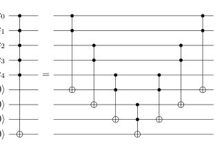
<figcaption class="paper-figure-caption"><b>Fig 1.</b> Figure 1: Optimal Toffoli-depth 𝑛-MCT decompositions as- suming all-to-all qubit connectivity, for 𝑛= 5.</figcaption>
</figure>
<figure class="paper-figure-card">
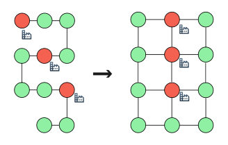
<figcaption class="paper-figure-caption"><b>Fig 2.</b> Figure 2: Linear vs. grid factory placement, showing heuristic- selected factory modules in red and standard modules in green.</figcaption>
</figure>
<figure class="paper-figure-card">
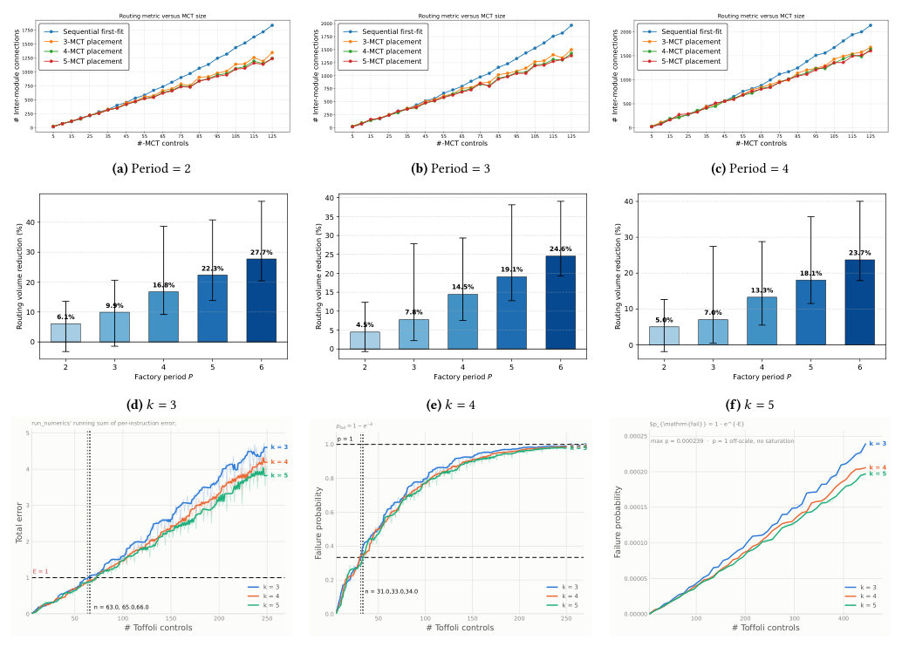
<figcaption class="paper-figure-caption"><b>Fig 3.</b> Figure 3: Inter-module routing characteristics under different factory placements and grouping configurations. (a)–(c) show the linear BB-module architecture for factory periods 2, 3, and 4, respectively, while (d)–(f) show the improvement in grid architecture vs linear for grouping factors 𝑘= 3, 4, and 5. (g)–(h) shows the aggregate and circuit failure probabilities for hardware error rates of 𝑝= 10−3 and and 𝑝= 10−4</figcaption>
</figure>
</div>
<p><strong>Summary.</strong> This work tackles the resource overhead of implementing complex MCT gates on BB-code quantum computers. The authors introduce a novel, structure-aware placement strategy that groups interacting circuit components to minimize inter-module communication. This approach significantly reduces routing overhead and provides quantitative estimates of circuit failure probabilities for fault-tolerant quantum computation.</p>
<p><strong>Why it may be interesting.</strong> While focused on quantum computation, the optimization techniques—specifically the graph-based placement heuristics and resource estimation—are relevant to designing complex physical implementations of quantum circuits.</p>
<details>
<summary>Detailed structure</summary>
<p><strong>Main problem.</strong> The paper addresses the major optimization challenge of efficiently mapping high-level Multi-Controlled Toffoli (MCT) gates onto fault-tolerant quantum architectures based on Bivariate Bicycle (BB) codes.</p>
<p><strong>Main result.</strong> A targeted placement strategy exploiting the binary-tree structure of MCT decompositions reduces inter-module instruction counts by up to 16.02%, and grid-based layouts offer significant routing improvements over linear ones.</p>
<p><strong>Method.</strong> The authors propose a structure-aware placement strategy combined with direct |CCZ&gt; state injection to map optimal MCT decompositions onto the BB-code architecture, minimizing inter-module routing overhead.</p>
<p><strong>Model / system.</strong> The system is a fault-tolerant quantum computer utilizing Bivariate Bicycle (BB) codes, which are a type of qLDPC code. The workload involves implementing MCT gates, requiring the management of magic-state factories for non-Clifford operations.</p>
<p><strong>Key observables.</strong> Inter-module instruction count (routing overhead), aggregate execution errors (E), and circuit failure probabilities (P_fail).</p>
<p><strong>Important parameters / regimes.</strong> The grouping factor (k), the physical error rate (p), and the topology (grid vs. linear).</p>
<p><strong>Assumptions / limitations.</strong> The analysis assumes the availability of optimal-Toffoli-depth MCT decompositions and relies on the Qiskit community's bicycle_numerics error estimator.</p>
<p><strong>Figures summary.</strong> Figures illustrate the comparison of routing performance between linear and grid factory placements, and show the calculated aggregate error and circuit failure probabilities as a function of circuit size (n) and physical error rate (p).</p>
<p><strong>Paper structure.</strong> The paper first establishes the difficulty of mapping MCT gates onto BB-code architectures. It then introduces the targeted placement strategy, detailing how grouping subtrees reduces routing overhead. Finally, it validates the approach by analyzing aggregate error and failure probabilities under different topological constraints.</p>
</details>
<details>
<summary>Abstract</summary>
<p>The multi-controlled Toffoli (MCT) gate is a fundamental primitive in quantum circuit design, with applications in quantum arithmetic, cryptanalysis, and algorithmic implementations. Being a high-level logical operation, the efficient decomposition of MCT gates into lower-level netlists has remained a major optimization challenge for decades. While emerging quantum error-correcting codes such as bivariate bicycle (BB) codes drastically reduce fault-tolerance overhead, realizing non-Clifford circuits on modular BB-code architectures introduces complex compilation bottlenecks governed by inter-module routing, factory density, and layout. Consequently, the mapping of MCT gates onto BB-code architectures remains relatively unexplored.   In this paper, we overcome these challenges by mapping optimal-Toffoli-depth MCT decompositions (Dutta et al., PRA, 2025) onto BB-code-based fault-tolerant architectures via direct $\lvert \mathrm{CCZ} \rangle$ state injection from an external magic state factory. We introduce a targeted placement strategy that exploits the binary-tree structure of MCT decompositions to co-locate interacting subtrees. This approach reduces inter-module instruction counts by up to $\mathbf{16.02}\%$ compared to a naive sequential first-fit placement. We also evaluate the impact of factory placement across different topologies, demonstrating that grid-based layouts yield up to a $\mathbf{23.7}\%$ reduction in inter-module instructions relative to linear architectures (Yoder et al., arXiv, 2025). Finally, we validate the practical viability of our compiled circuits by analyzing aggregate execution errors and logical failure probabilities using the bicycle-ISA error estimator bicycle_numerics provided by the Qiskit community, https://github.com/qiskit-community/bicycle-architecture-compiler.</p>
</details>
<p><sub><a href="#top">↑ back to top</a></sub></p>

<p><a id="paper-2609.00694"></a></p>
<h3 id="the-fermionic-cohomology-problem-on-the-full-fock-space-is-math764math-complete"><a href="http://arxiv.org/abs/2609.00694v1">The Fermionic Cohomology Problem on the Full Fock Space Is $\mathrm{QMA}_1$-Complete</a></h3>
<p><strong>Authors:</strong> Yibin Wang<br>
<strong>Type:</strong> theory · <strong>Category:</strong> quantum information and computing · <strong>PDF:</strong> <a href="https://arxiv.org/pdf/2609.00694v1">https://arxiv.org/pdf/2609.00694v1</a><br>
<strong>Analysis basis:</strong> full PDF text, analyzed in chunks</p>
<div class="figure-strip-hint">↔ Scroll figures horizontally</div>
<div class="paper-figures-scroll">
<figure class="paper-figure-card">

<figcaption class="paper-figure-caption"><b>Fig 1.</b> Low-resolution page preview, page 2</figcaption>
</figure>
<figure class="paper-figure-card">
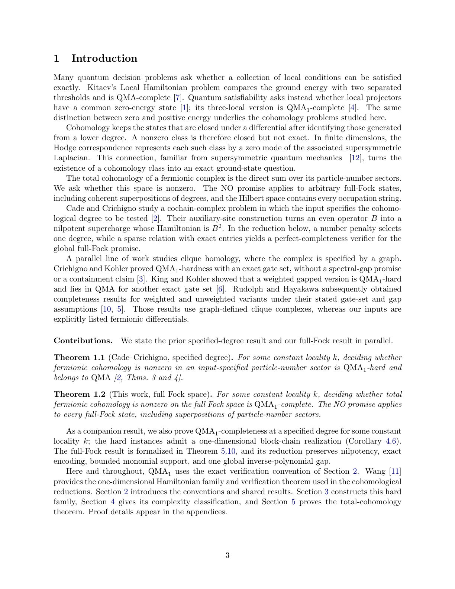
<figcaption class="paper-figure-caption"><b>Fig 2.</b> Low-resolution page preview, page 3</figcaption>
</figure>
<figure class="paper-figure-card">
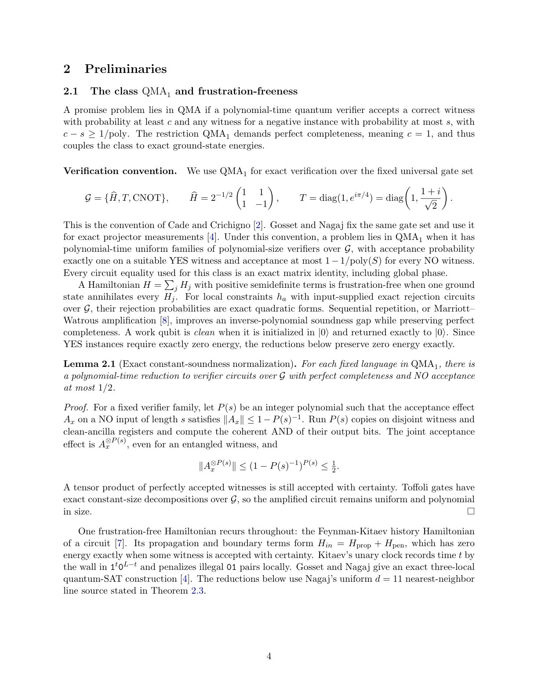
<figcaption class="paper-figure-caption"><b>Fig 3.</b> Low-resolution page preview, page 4</figcaption>
</figure>
<figure class="paper-figure-card">
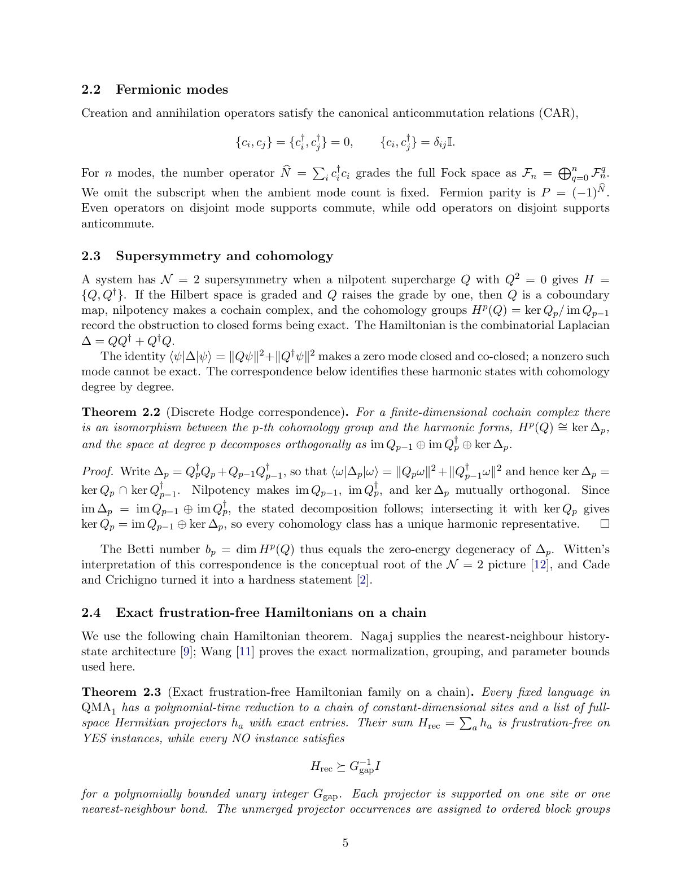
<figcaption class="paper-figure-caption"><b>Fig 4.</b> Low-resolution page preview, page 5</figcaption>
</figure>
<figure class="paper-figure-card">
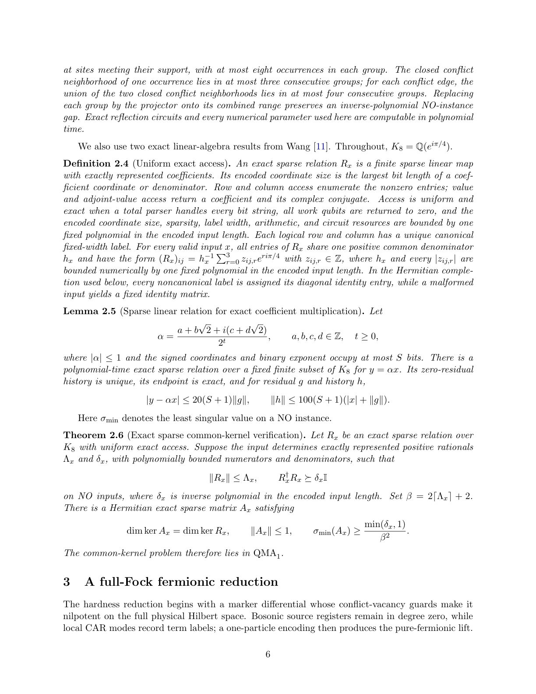
<figcaption class="paper-figure-caption"><b>Fig 5.</b> Low-resolution page preview, page 6</figcaption>
</figure>
</div>
<p><strong>Summary.</strong> This paper proves that determining the fermionic cohomology on the entire Fock space is $\mathrm{QMA}_1$-complete. It achieves this by mapping the physical problem onto a quantum computational hardness problem using advanced techniques involving differential operators and number-penalized lifts. This result establishes a fundamental computational barrier for solving zero-energy state problems in fermionic quantum systems.</p>
<p><strong>Why it may be interesting.</strong> This work connects abstract algebraic topology (cohomology) in quantum many-body systems directly to the computational complexity class $\mathrm{QMA}_1$, providing a powerful tool for classifying the hardness of ground-state problems in quantum physics.</p>
<details>
<summary>Detailed structure</summary>
<p><strong>Main problem.</strong> The paper addresses the computational complexity of determining if the fermionic cohomology is non-zero on the entire, full Fock space.</p>
<p><strong>Main result.</strong> The global fermionic cohomology problem on the full Fock space is proven to be $\mathrm{QMA}_1$-complete.</p>
<p><strong>Method.</strong> The proof involves constructing a reduction from known $\mathrm{QMA}_1$-hard problems by lifting the problem structure to the full Fock space using number-penalized techniques and analyzing the resulting Laplacian operator.</p>
<p><strong>Model / system.</strong> The system involves fermionic differential operators ($D$) acting on the full Fock space ($\mathcal{F}n$), which are related to the zero-energy states of an associated supersymmetric Hamiltonian. The structure is built upon marker differentials and data block encoding.</p>
<p><strong>Key observables.</strong> The Betti number ($b_p$), which equals the zero-energy degeneracy of the Laplacian ($\Delta_p$), and the existence of non-zero cohomology classes.</p>
<p><strong>Important parameters / regimes.</strong> The complexity class $\mathrm{QMA}_1$, the maximum number of modes a monomial acts on (e.g., $\le 41$), and the gap ($\delta$) in the Hamiltonian spectrum.</p>
<p><strong>Assumptions / limitations.</strong> The analysis relies on the exact verification convention of $\mathrm{QMA}_1$ and the ability to construct specific, sparse, and well-conditioned residual relations ($eR_ullet$).</p>
<p><strong>Figures summary.</strong> The notes do not describe figures, but reference theorems and lemmas that establish the mathematical machinery for the complexity proof.</p>
<p><strong>Paper structure.</strong> The paper progresses from defining the physical problem (cohomology) to establishing the complexity class (QMA1) by first analyzing the specified-degree case, and finally generalizing the result to the full-Fock space using number-penalized lifts and explicit encoding schemes.</p>
</details>
<details>
<summary>Abstract</summary>
<p>Fermionic cohomology characterizes the zero-energy states of the supersymmetric Hamiltonian associated with a fermionic differential. Previous work showed that the problem restricted to a particle-number sector specified with the input is $\mathrm{QMA}_1$-hard and belongs to $\mathrm{QMA}$. We study the global problem, in which no sector is specified and cohomology may occur anywhere in the full Fock space. This formulation directly matches the whole-space ground-state question: a specified-degree NO instance may still have zero-energy states in another sector, whereas the global NO promise excludes them across all sectors and their superpositions. We prove that this full-Fock problem is $\mathrm{QMA}_1$-complete for differentials given as exact lists of local monomials, even when each monomial acts on at most $41$ modes. As a companion result, we prove $\mathrm{QMA}_1$-completeness for the specified-degree problem with $30$-mode terms whose hard instances admit a one-dimensional block-chain realization.</p>
</details>
<p><sub><a href="#top">↑ back to top</a></sub></p>

<p><a id="paper-2609.00869"></a></p>
<h3 id="understanding-ir-singularities-in-the-loop-tree-duality"><a href="http://arxiv.org/abs/2609.00869v1">Understanding IR singularities in the Loop-Tree Duality</a></h3>
<p><strong>Authors:</strong> Germán Rodrigo, Leandro Cieri, Prasanna K. Dhani, Roger J. Hernández-Pinto, Jorge J. Martínez de Lejarza, Salvador A. Ochoa-Oregon, Konstantinos Pyretzidis, Selomit Ramírez-Uribe, David F. Rentería-Estrada, Andrés E. Rentería-Olivo, José Ríos-Sánchez, German F. R. Sborlini, Surabhi Tiwari, Juan P. Uribe-Ramírez<br>
<strong>Type:</strong> theory · <strong>Category:</strong> quantum information and computing · <strong>PDF:</strong> <a href="https://arxiv.org/pdf/2609.00869v1">https://arxiv.org/pdf/2609.00869v1</a><br>
<strong>Analysis basis:</strong> full PDF text, analyzed in chunks</p>
<div class="figure-strip-hint">↔ Scroll figures horizontally</div>
<div class="paper-figures-scroll">
<figure class="paper-figure-card">
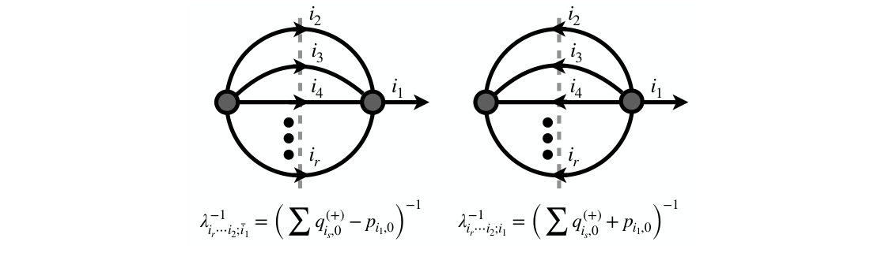
<figcaption class="paper-figure-caption"><b>Fig 1.</b> Figure 1: Causal propagators representing configurations in which the momentum flows of the internal particles are aligned (left) or counter-aligned (right) with the external momentum. The line intersecting the internal particles divides the amplitude into two subamplitudes. The gray blobs represent any multiloop subgraphs. The right configuration is finite, assuming 𝑝𝑖1,0 &gt; 0.</figcaption>
</figure>
<figure class="paper-figure-card">
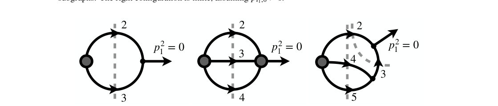
<figcaption class="paper-figure-caption"><b>Fig 2.</b> Figure 2: Double collinear configuration 𝜆−1 32;¯1 = O(𝑘−2 ⊥), triple collinear configuration 𝜆−1 432;¯1 = O(𝑘−2 ⊥),</figcaption>
</figure>
<figure class="paper-figure-card">
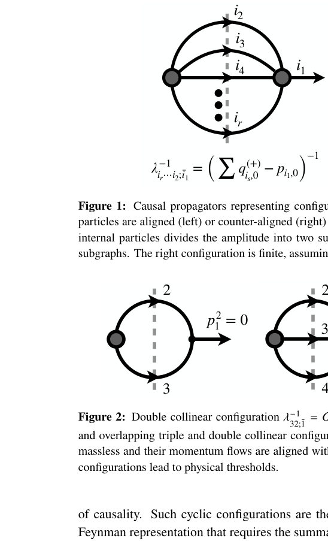
<figcaption class="paper-figure-caption"><b>Fig 3.</b> Figure 1 provides a graphical interpretation of the causal propagator in Eq. (1). The momentum flows of the internal particles involved are always aligned or counter-aligned with the momentum of</figcaption>
</figure>
<figure class="paper-figure-card">
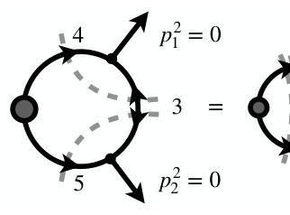
<figcaption class="paper-figure-caption"><b>Fig 4.</b> Figure 3: Soft singularity:  𝜆45;12  𝜆43;1 + 𝜆53;2 −1 . The two collinear configurations on the left become compatible in the soft limit (𝜆3 →0).</figcaption>
</figure>
<figure class="paper-figure-card">
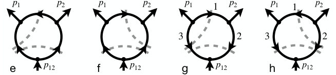
<figcaption class="paper-figure-caption"><b>Fig 5.</b> Figure 4: The eight directed states of the one-loop three-point function: a) and b) are cyclic and therefore absent from the LTD representation; c) and d) are collinear; e) and f) are collinear, soft and threshold singular; g) and h) are finite.</figcaption>
</figure>
</div>
<p><strong>Summary.</strong> This work details how Loop-Tree Duality simplifies the understanding of infrared and threshold singularities in complex quantum field theory calculations. It introduces a novel approach to construct finite scattering amplitudes by enforcing causal constraints. Furthermore, it provides a unique perspective by encoding this underlying causal structure using qubits and quantum circuits.</p>
<p><strong>Why it may be interesting.</strong> While the core physics is QFT, the explicit mapping of the causal/singular structure onto qubits and quantum circuits provides a direct, novel application of quantum information concepts to high-energy theoretical physics calculations.</p>
<details>
<summary>Detailed structure</summary>
<p><strong>Main problem.</strong> The paper addresses the complex theoretical challenge of understanding and constructing finite, infrared (IR) and threshold-free multiloop Feynman integrals in Quantum Field Theory.</p>
<p><strong>Main result.</strong> The Loop-Tree Duality (LTD) provides a transparent framework for identifying these finite integrals, and the methodology can be mapped onto a quantum circuit structure using qubits.</p>
<p><strong>Method.</strong> The authors review LTD, which reformulates loop integrations to explicitly handle singularities, and propose encoding the causal structure of the amplitudes using qubits and quantum circuits.</p>
<p><strong>Model / system.</strong> The physical system is Quantum Field Theory (QFT) calculations involving multiloop scattering amplitudes. The mathematical framework utilizes Loop-Tree Duality (LTD) and is conceptually mapped onto quantum circuits.</p>
<p><strong>Key observables.</strong> Infrared (IR) and threshold singularities, and the construction of finite, threshold-free scattering amplitudes.</p>
<p><strong>Important parameters / regimes.</strong> Loop integration parameters, external and internal momenta, and the structure of causal propagators.</p>
<p><strong>Assumptions / limitations.</strong> The LTD representation is assumed to inherently enforce causality by restricting configurations to acyclic paths, which is key to avoiding spurious singularities.</p>
<p><strong>Figures summary.</strong> Figures illustrate causal propagators, examples of collinear configurations leading to physical thresholds, and the directed states of a one-loop three-point function distinguishing finite from singular configurations.</p>
<p><strong>Paper structure.</strong> The paper reviews the LTD advantage in visualizing singularities, details novel strategies for constructing finite integrals (including pole vanishing conditions), and concludes by presenting a complementary perspective using qubits and quantum circuits to encode the causal structure.</p>
</details>
<details>
<summary>Abstract</summary>
<p>One of the main advantages of the Loop-Tree Duality representation of scattering amplitudes is that it makes the origin of infrared and threshold singularities particularly transparent. This talk reviews recent progress in describing how singularities emerge and cancel at the level of scattering and vacuum amplitudes, discusses a novel strategy to efficiently construct finite integrals, and presents a complementary perspective based on encoding the underlying causal and singular structure in terms of qubits and quantum circuits.</p>
</details>
<p><sub><a href="#top">↑ back to top</a></sub></p>

<p><a id="paper-2609.01008"></a></p>
<h3 id="uniform-hiding-of-haar-block-transpose-gram-matrices"><a href="http://arxiv.org/abs/2609.01008v1">Uniform Hiding of Haar Block Transpose Gram Matrices</a></h3>
<p><strong>Authors:</strong> Hongru Zhao<br>
<strong>Type:</strong> theory · <strong>Category:</strong> quantum information and computing · <strong>PDF:</strong> <a href="https://arxiv.org/pdf/2609.01008v1">https://arxiv.org/pdf/2609.01008v1</a><br>
<strong>Analysis basis:</strong> full PDF text, analyzed in chunks</p>
<div class="figure-strip-hint">↔ Scroll figures horizontally</div>
<div class="paper-figures-scroll">
<figure class="paper-figure-card">
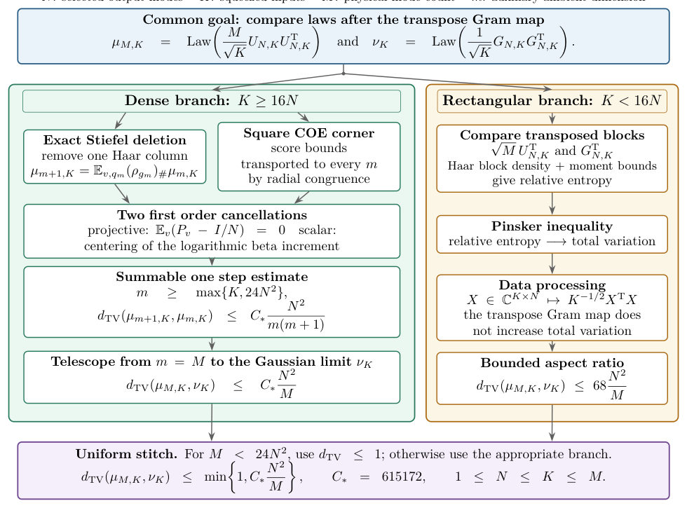
<figcaption class="paper-figure-caption"><b>Fig 1.</b> FIG. 1. Proof architecture. The dense branch combines exact one column recursion, radial transport, centered COE scores, and telescoping. The rectangular branch uses a Haar block relative entropy bound and data processing. Their combination proves Theorem I.1.</figcaption>
</figure>
<figure class="paper-figure-card">
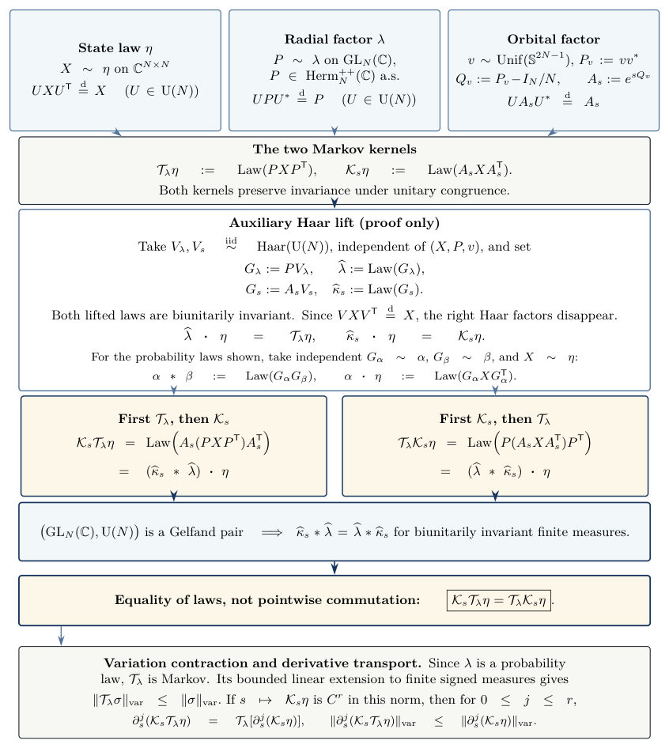
<figcaption class="paper-figure-caption"><b>Fig 2.</b> FIG. 2. Random matrix realization of the Haar lift proof of Lemma III.2. Biunitary convolution and the Gelfand pair property give the probability law identity in Eq. (III.9). The bottom line records the separate Markov contraction and variation derivative transport in Eqs. (III.10) and (III.11).</figcaption>
</figure>
<figure class="paper-figure-card">
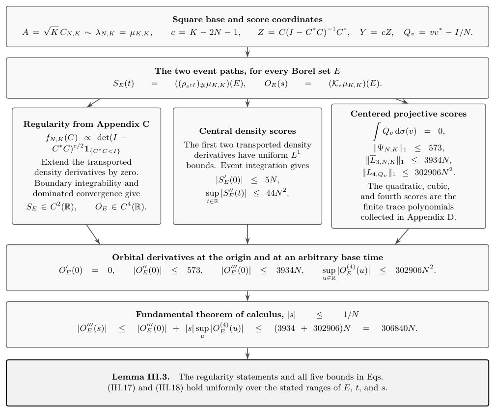
<figcaption class="paper-figure-caption"><b>Fig 3.</b> FIG. 3. Proof flow for Lemma III.3. Appendix C supplies variation regularity for the scalar and orbital event paths. Appendix D evaluates their density scores by projective averaging and inverse Wishart moments. The final line propagates the third derivative bound from the origin to the full interval required in Eq. (III.18).</figcaption>
</figure>
<figure class="paper-figure-card">
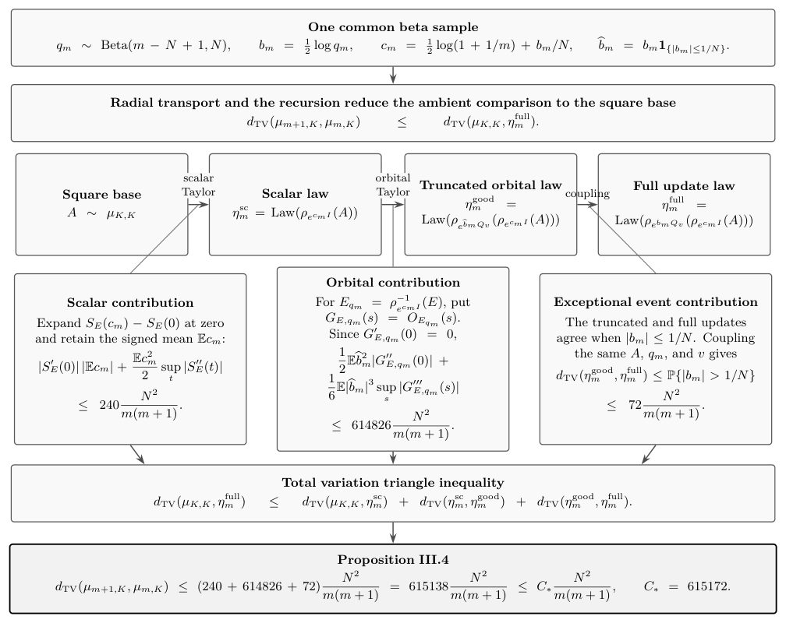
<figcaption class="paper-figure-caption"><b>Fig 4.</b> FIG. 4. Eventwise Taylor decomposition used in Proposition III.4. The same beta sample defines the scalar shift, the centered orbital shift, and its truncation. Two intermediate laws expose the scalar Taylor contribution, the orbital Taylor contribution, and the exceptional event contribution before the total variation triangle inequality is applied.</figcaption>
</figure>
</div>
<p><strong>Summary.</strong> This theoretical paper establishes a strong, quantifiable bound on the total variation distance between the probability distribution generated by a complex interferometer (Haar-derived) and a simple Gaussian reference distribution. By employing advanced random matrix theory and telescoping arguments, the authors show that this difference decays rapidly with the size of the system, providing a critical component for hardness arguments in quantum computation.</p>
<p><strong>Why it may be interesting.</strong> This work provides a rigorous, quantifiable statement about the hardness of distinguishing the true quantum process (Haar-derived) from a classical Gaussian model, which is crucial for quantum security proofs.</p>
<details>
<summary>Detailed structure</summary>
<p><strong>Main problem.</strong> The paper aims to prove a uniform total variation comparison (hiding) between the probability law of a complex symmetric transpose Gram matrix derived from a Haar interferometer and its corresponding complex Gaussian reference law.</p>
<p><strong>Main result.</strong> The total variation distance between the two probability laws is bounded by an explicit error term, $\delta_{M,N}$, which is quadratic in the number of selected output modes ($N$) and inversely proportional to the interferometer size ($M$).</p>
<p><strong>Method.</strong> The proof combines advanced random matrix theory techniques, including centered circular orthogonal ensemble (COE) score analysis, rectangular relative entropy bounds, and a telescoping argument across ambient dimensions.</p>
<p><strong>Model / system.</strong> The model is Gaussian Boson Sampling (GBS) implemented with squeezed vacuum states entering a passive interferometer, where the probability is governed by the squared hafnian of a complex symmetric product.</p>
<p><strong>Key observables.</strong> The probability distribution governed by the transpose Gram product ($ ext{Y Y}^T$), and the total variation distance ($   ext{dTV}$) between the Haar-derived law and the Gaussian law.</p>
<p><strong>Important parameters / regimes.</strong> N (selected output modes), K (squeezed inputs), M (physical mode count). The result is uniform for $N \le K \le M$.</p>
<p><strong>Assumptions / limitations.</strong> The analysis assumes the pure, zero-displacement setting and specifically compares the ordinary transpose ($ ext{Y Y}^T$) rather than the Hermitian product ($   ext{Y Y}^*$).</p>
<p><strong>Figures summary.</strong> Figure 1 summarizes the proof architecture combining ambient recursion, COE scores, and rectangular comparison. Other figures illustrate the Haar lift, Markov contraction, and density score evaluation steps.</p>
<p><strong>Paper structure.</strong> The paper builds the result by first establishing regularity and finite bounds for event paths (Lemma III.3), then deriving a one-step bound on the total variation distance ($    ext{dTV}(\mu_{m+1,K}, \mu_{m,K})$) via a Taylor decomposition (Proposition III.4), and finally telescoping this one-step bound to achieve the overall final bound.</p>
</details>
<details>
<summary>Abstract</summary>
<p>Gaussian boson sampling with equally squeezed active inputs assigns collision free probabilities through a complex symmetric transpose Gram matrix formed from a rectangular block of a Haar interferometer. We prove a finite total variation comparison with the corresponding complex Gaussian transpose Gram law. The error bound is explicit, quadratic in the number of selected output modes, inversely proportional to the interferometer size, and uniform in the number of squeezed active inputs. The proof combines a centered circular orthogonal ensemble score analysis in the dense regime with a rectangular relative entropy bound. This result supplies a random matrix replacement component of Gaussian boson sampling hardness arguments.</p>
</details>
<p><sub><a href="#top">↑ back to top</a></sub></p>
</details>
<h2 id="secondary-cond-mat-archives">Secondary cond-mat archives</h2>
<p><em>Papers from cond-mat.mtrl-sci, mes-hall, other, soft, supr-con. These archives are de-prioritized — they appear at the end regardless of relevance score.</em></p>
<h3 id="relevant-in-secondary-archives-28">Relevant in secondary archives (28)</h3>

<p><a id="paper-2609.00856"></a></p>
<h3 id="spatio-temporal-coherent-molding-and-retrieval-of-pulsed-signals-in-optical-waveguides"><a href="http://arxiv.org/abs/2609.00856v1">Spatio-temporal coherent molding and retrieval of pulsed signals in optical waveguides</a></h3>
<p><strong>Authors:</strong> Nika Durishvili, Ramaz Khomeriki, Vakhtang Jandieri, Douglas H. Werner, Daniel Erni, Jamal Berakdar<br>
<strong>Type:</strong> theory · <strong>Category:</strong> other · <strong>PDF:</strong> <a href="https://arxiv.org/pdf/2609.00856v1">https://arxiv.org/pdf/2609.00856v1</a><br>
<strong>Analysis basis:</strong> full PDF text, analyzed in chunks
<strong>Topic relevance:</strong> <code>analog quantum simulation</code> <strong>3/5</strong> · <code>interference shaping light</code> <strong>3/5</strong> · <code>correlated / nonlocal dissipation</code> <strong>2/5</strong> · <code>driven-dissipative phase transition</code> <strong>2/5</strong> · <code>methods for driven-dissipative</code> <strong>2/5</strong> · <code>Keldysh / 2PI / non-Gaussian methods</code> <strong>1/5</strong> · <code>non-equilibrium universality</code> <strong>1/5</strong> · <code>quantum measurements</code> <strong>1/5</strong></p>
<div class="figure-strip-hint">↔ Scroll figures horizontally</div>
<div class="paper-figures-scroll">
<figure class="paper-figure-card">
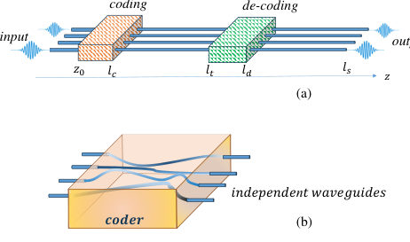
<figcaption class="paper-figure-caption"><b>Fig 1.</b> Fig. 1. (a) Schematics for coding (from z = z0 to z = lc) and decoding (from z = lt to z = ld) device. (b) The coder and decoder are composed of the coupled waveguides. The pulses are injected in independent waveguides at z &lt; z0. Coupling causes the power to randomly distribute at z = lc, encrypting the input signal. The pulses are transferred to the decoder at z = lt via independent transmission lines. At z = lt the signal is decoded according to the scheme in the manuscript.</figcaption>
</figure>
<figure class="paper-figure-card">
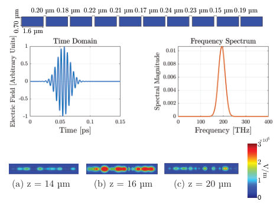
<figcaption class="paper-figure-caption"><b>Fig 2.</b> Fig. 2. First row: schematic showing the cross section of a 3-D optical rectangular dielectric waveguide array. Geometrical parameters and separation distance of ten identical waveg- uides are indicated. The relative dielectric permittivities of the waveguides and the background medium are ε1r = 3.9050 and εsr = 2.0851, respectively. Second row: Gaussian pulse employed in the simulations with a wavelength 1.55 µm and its Fourier transform. Broadband pulses are injected into the 2nd, 5th, 7th and 8th waveguides, which are arbitrarily chosen. Third row: cross-sectional electric field distributions in the en- tire system for the propagation distances: z = 14µm, z = 16µm and z = 20µm at the...</figcaption>
</figure>
<figure class="paper-figure-card">
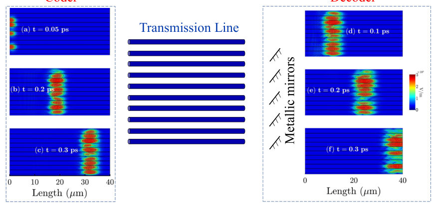
<figcaption class="paper-figure-caption"><b>Fig 3.</b> Fig. 3. Electric field magnitude distribution of the signal propagation in the waveguide array for the coder and decoder. At t = 0 initial Gaussian pulses are injected into the 2nd, 5th, 7th and 8th ports (c.f. Fig. 1). The wavelength of the Gaussian pulse is λ = 1.55µm and the pulse duration is 18 fs. The graphs (a)-(c) show the evolution of the signal for different times from t = 0.05ps to t = 0.3ps in the coder. In practice, the encrypted signal is decoupled and transmitted to the decoder via independent transmission lines. Phase-modifying metamaterials or perfectly reflecting mirrors, such as protected metallic (silver) mirrors, may be used to achieve the required phase shifts. (d-f)...</figcaption>
</figure>
<figure class="paper-figure-card">
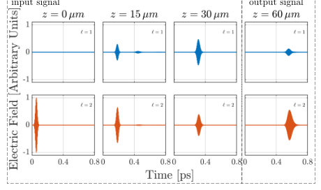
<figcaption class="paper-figure-caption"><b>Fig 4.</b> Fig. 4. Time evolution of the pulsed input signal at different cross sections in the individual waveguides labelled by ℓ. Far right column shows the output signal from the decoder.</figcaption>
</figure>
<figure class="paper-figure-card">
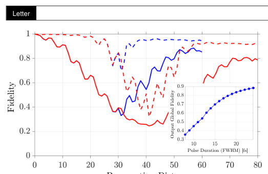
<figcaption class="paper-figure-caption"><b>Fig 5.</b> Fig. 5. Global fidelity (solid lines) and phase fidelity (dashed lines) as a function of z for two different lengths of the coder/decoder: L = 30µm (blue) and L = 40µm (red). Pulse duration is 18 fs. An inset shows a dependence of the output global fidelity on the pulse duration at L = 40µm.</figcaption>
</figure>
</div>

<p><strong>Summary.</strong> This paper presents a method to retrieve an input optical signal that has been encoded and propagated through a complex, coupled waveguide array. The retrieval mechanism relies on introducing a precise, engineered phase shift at the output section (decoder). Simulations confirm that this approach allows for high-fidelity signal reconstruction, suggesting applications in ultrafast coherent information processing.</p>
<p><strong>Why it may be interesting.</strong> This work directly addresses coherent control and signal processing in structured photonic media, which has strong overlap with quantum optics and open quantum system dynamics, particularly regarding time-reversal concepts.</p>
<details>
<summary>Detailed structure</summary>
<p><strong>Main problem.</strong> The core challenge is retrieving a phase-encrypted input optical signal with high fidelity after it has undergone complex, coherent propagation through an array of coupled waveguides.</p>
<p><strong>Main result.</strong> The proposed scheme successfully demonstrates the retrieval of the input broadband signal using a localized phase-shifting mechanism in the decoder section of the waveguide array.</p>
<p><strong>Method.</strong> The retrieval is achieved by applying a specific, engineered phase shift ($\pi$ shift in odd waveguides) at the decoder entrance, which theoretically causes a coherent inversion of the propagation evolution.</p>
<p><strong>Model / system.</strong> The system utilizes an array of coupled dielectric waveguides, modeled by a discrete Schrödinger-type equation describing the evolution of the electric field components along the propagation direction (z).</p>
<p><strong>Key observables.</strong> Global fidelity ($F_{gl}$) and phase fidelity ($F_{ph}$) are used to quantify the success of signal retrieval, alongside cross-sectional electric field distributions.</p>
<p><strong>Important parameters / regimes.</strong> Key parameters include coupling strengths ($J_\ell$), dielectric permittivities ($\epsilon_{r1}, \epsilon_{sr}$), and the pulse characteristics ($\lambda = 1.55 \mu	ext{m}$, 18 fs duration).</p>
<p><strong>Assumptions / limitations.</strong> The analysis relies on the ability to implement precise, engineered phase shifts at the decoder and assumes the weak-coupling regime for the waveguide array.</p>
<p><strong>Figures summary.</strong> Figures illustrate the schematic setup of the coder and decoder, the evolution of the electric field magnitude through the system, and plots showing the fidelity versus propagation distance.</p>
<p><strong>Paper structure.</strong> The paper first establishes the physical problem in coupled waveguides, develops the theoretical framework using coupled-mode equations, proposes the phase-shifting retrieval concept, and validates the scheme using full-wave electromagnetic simulations.</p>
</details>
<details>
<summary>Abstract</summary>
<p>Optical waveguides are key elements for high fidelity, long distance optical communications. Coupled waveguide arrays allow for higher information density, steerting the propagation direction, and for encoding information. However, due to the mixing of relative phases for short pulses containing multiple waveguide-mode frequencies, a process for retrieving an encoded input state once these signals undergo coherent propagation remains elusive. A concept is presented to extract with high fidelity the phase-encrypted input signal from spatio-temporal propagated states. As a realization, an array of coupled waveguides is suggested with the retrieval mechanism being realized by local phase shifts that comply with the identified retrieval concept. Three dimensional full-wave electromagnetic simulations for broadband optical signals in coupled dielectric waveguides confirm the validity of the scheme and the high fidelity of information retrieval pointing to potential applications, for instance in ultrafast coherent coding and decoding of information imprinted on pulse sequences.</p>
</details>
<p><sub><a href="#top">↑ back to top</a></sub></p>

<p><a id="paper-2609.00926"></a></p>
<h3 id="cavity-control-of-majorana-bound-states-in-superconductor-semiconductor-heterostructures"><a href="http://arxiv.org/abs/2609.00926v1">Cavity-control of Majorana bound states in superconductor-semiconductor heterostructures</a></h3>
<p><strong>Authors:</strong> Francesco Buonemani, Massimo Balmelli, Olesia Dmytruk<br>
<strong>Type:</strong> theory · <strong>Category:</strong> other · <strong>PDF:</strong> <a href="https://arxiv.org/pdf/2609.00926v1">https://arxiv.org/pdf/2609.00926v1</a><br>
<strong>Analysis basis:</strong> full PDF text, analyzed in chunks
<strong>Topic relevance:</strong> <code>analog quantum simulation</code> <strong>3/5</strong> · <code>Tavis-Cummings &amp; cavity-many-emitter</code> <strong>2/5</strong> · <code>Keldysh / 2PI / non-Gaussian methods</code> <strong>1/5</strong> · <code>driven-dissipative phase transition</code> <strong>1/5</strong> · <code>methods for driven-dissipative</code> <strong>1/5</strong></p>
<div class="figure-strip-hint">↔ Scroll figures horizontally</div>
<div class="paper-figures-scroll">
<figure class="paper-figure-card">
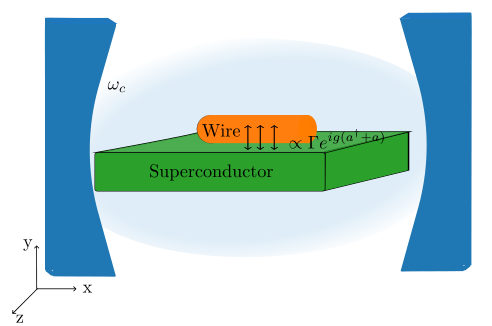
<figcaption class="paper-figure-caption"><b>Fig 1.</b> FIG. 1. Scheme of a setup: Quantum wire (in orange) aligned along x tunnel coupled with amplitude Γ to a bulk su- perconductor (in green) embedded in a single mode photonic cavity (in blue) with frequency ωc. Tunneling amplitude Γ is dressed by a phase Γeig(a+a†) that arises from photonic vector potential aligned along y direction.</figcaption>
</figure>
<figure class="paper-figure-card">
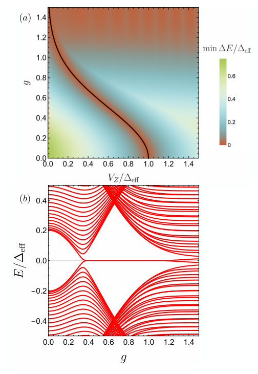
<figcaption class="paper-figure-caption"><b>Fig 2.</b> FIG. 2. (a) Topological phase diagram and bulk gap of the proximitized wire embedded in a cavity as a function of Zee- man energy VZ/∆eff and light-matter coupling g. For g = 0, we recover the phase boundary of the isolated nanowire, with the topological phase transition occurring at VZ = ∆eff. For g smaller than the critical value gc the system is gapped ex- cept at the topological gap closing at k = 0 (black solid line) given by Eq. (9). The bulk gap increases when moving away from the phase boundaries. For g &gt; gc the superconducting pairing is suppressed and system becomes gapless. (b) Energy spectrum of a finite-length proximitized wire embedded in a cavity as a function of g for...</figcaption>
</figure>
<figure class="paper-figure-card">
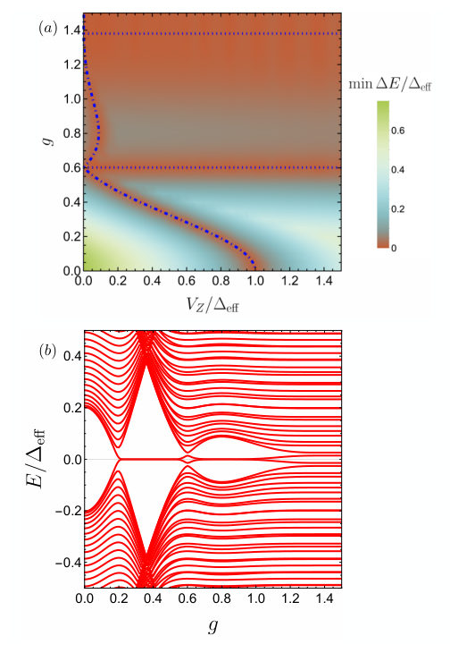
<figcaption class="paper-figure-caption"><b>Fig 3.</b> FIG. 3. (a) Topological phase diagram and bulk gap of the proximitized wire coupled to photons as a function of VZ/∆eff and g. Gap closing at k = 0 is given by Eq. (11) and corre- sponds to the phase boundary between topological and trivial phases (blue dotdashed line). Blue dotted lines correspond to the gap closing when ∆effJ0(4g√n) = 0 corresponding to the suppression of the superconducting pairing that is indepen- dent of VZ. This gap closing at gb does not change the phase of the system, but reduces the bulk gap. For g &gt; gc the system becomes gapless. (b) Energy spectrum as a function of g for VZ/∆eff = 0.8. The spectrum is obtained via nu- merical diagonalization of the effective...</figcaption>
</figure>
<figure class="paper-figure-card">
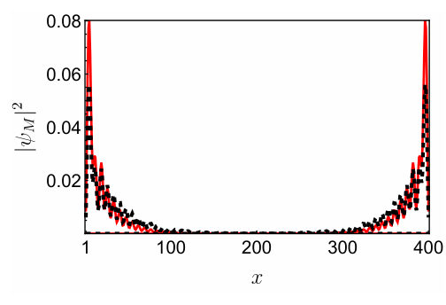
<figcaption class="paper-figure-caption"><b>Fig 4.</b> FIG. 4. Probability density |ψM|2 of the MBSs on the site x for different values of the light-matter coupling strength g and fixed value of Zeeman energy VZ/∆eff = 0.8. For gt &lt; g = 0.5 &lt; gb (red solid line), the system is in the topological phase, and the MBSs are localized at opposite ends of the wire. For gb &lt; g = 0.8 &lt; gc (black dashed), the near zero-energy modes remain localized at the ends of the wire even after the bulk gap closes due to the suppression of the superconducting pairing when ∆effJ0(4g√n) = 0. The MBS amplitude is smaller for g = 0.8 than for g = 0.5 that reflects the suppression of the bulk gap with increasing light-matter coupling, as shown in Fig. 3. Other parameters...</figcaption>
</figure>
<figure class="paper-figure-card">
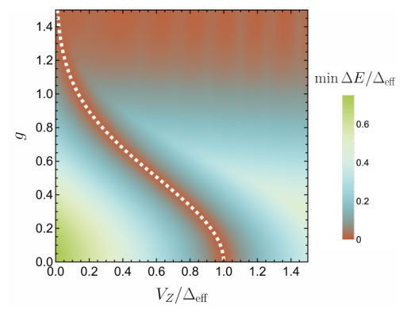
<figcaption class="paper-figure-caption"><b>Fig 5.</b> FIG. 5. Topological phase diagram and bulk gap of the prox- imitized wire embedded in a cavity obtained from numerically solving Eq. (17) as a function of Zeeman energy VZ/∆and light-matter coupling g. The bulk gap closes for g &lt; gc at the topological phase boundary given by Eq. (18) (dashed white line). The size of the bulk gap increases away from the phase boundary, but for large values of g &gt; gc the gap vanishes for all values of VZ, signaling a transition to a gapless phase. The photonic cutoff is set to be lmax = 10 and other parameters are the same as in Fig. 2.</figcaption>
</figure>
</div>

<p><strong>Summary.</strong> This theoretical study analyzes Majorana bound states in a superconductor-semiconductor nanowire coupled to an optical cavity. By solving the coupled electron-photon Hamiltonian, the authors show that the cavity interaction modifies the topological phase diagram, enabling the topological state to be accessed at lower external magnetic fields than previously thought possible.</p>
<p><strong>Why it may be interesting.</strong> This work directly combines concepts from cavity QED (light-matter coupling) with topological superconductivity, which is a major area of research in AMO physics and quantum optics.</p>
<details>
<summary>Detailed structure</summary>
<p><strong>Main problem.</strong> The paper theoretically investigates how coupling Majorana bound states (MBSs) in a superconductor-semiconductor heterostructure to a single-mode photonic cavity modifies the system's topological phase diagram.</p>
<p><strong>Main result.</strong> Cavity coupling shifts the phase boundary to smaller Zeeman energies, and even weak coupling allows entering the topological phase at lower critical Zeeman energies than the uncoupled case.</p>
<p><strong>Method.</strong> The authors derived an effective light-matter Hamiltonian and solved the coupled electron-photon system using exact diagonalization, high-frequency expansion, and mean-field decoupling.</p>
<p><strong>Model / system.</strong> The model is a hybrid platform: a 1D quantum wire tunnel-coupled to an s-wave superconductor, all embedded within a single-mode photonic cavity. The coupling enters the effective superconducting pairing term.</p>
<p><strong>Key observables.</strong> Topological phase boundary, gap closing, effective superconducting pairing strength.</p>
<p><strong>Important parameters / regimes.</strong> Light-matter coupling strength (g), Zeeman energy ($V_Z$), number of photons (n).</p>
<p><strong>Assumptions / limitations.</strong> The photonic vector potential is aligned along the tunneling direction, and the analysis uses approximations for the photon number (e.g., dark cavity limit or semiclassical limit).</p>
<p><strong>Figures summary.</strong> Figure 1 illustrates the physical setup (wire-superconductor-cavity). Figure 2(a) shows the topological phase diagram dependence on $V_Z/\Delta_{eff}$ and $g$ for the dark cavity limit.</p>
<p><strong>Paper structure.</strong> The paper establishes the coupled Hamiltonian, derives the effective wire-cavity Hamiltonian, and then applies various mathematical techniques (exact diagonalization, etc.) to calculate the phase diagram and analyze the impact of coupling strength.</p>
</details>
<details>
<summary>Abstract</summary>
<p>We theoretically study a hybrid superconductor-semiconductor platform hosting Majorana bound states coupled to a single mode photonic cavity. Starting with a one-dimensional wire coupled to a bulk $s$-wave superconductor embedded in a photonic cavity, we derive an effective light-matter Hamiltonian for such a platform. Assuming that the photonic vector potential is aligned along the tunneling between a wire and a superconductor, we find that the cavity coupling enters only in the effective superconducting pairing term. By solving the coupled electron-photon Hamiltonian using different approaches, such as exact diagonalization in case of zero or large number of photons, high-frequency expansion, and mean-field decoupling, we find that the phase boundary between the topological trivial phases is shifted to smaller values of the Zeeman energy compared to the uncoupled case. Cavity embedding has the strongest effect on the phase diagram in the semiclassical regime, corresponding to a large number of photons. In all cases, we find that at large values of the light-matter coupling strength the effective superconducting pairing is suppressed, driving the system into the gapless phase. We demonstrate that even small light-matter coupling strength allows for entering the topological phase at values of the Zeeman energy compared to the uncoupled platform.</p>
</details>
<p><sub><a href="#top">↑ back to top</a></sub></p>

<p><a id="paper-2609.01233"></a></p>
<h3 id="interferometry-reveals-spin-singlet-fractional-quantum-hall-edges-in-graphene"><a href="http://arxiv.org/abs/2609.01233v1">Interferometry reveals spin-singlet fractional quantum Hall edges in graphene</a></h3>
<p><strong>Authors:</strong> R. Ayache, K. Kim, M. Kuiri, Q. Benichou, H. Chakraborti, L. Pugliese, K. Watanabe, T. Taniguchi, H. -S. Sim, P. Roulleau<br>
<strong>Type:</strong> both · <strong>Category:</strong> strongly correlated electrons · <strong>PDF:</strong> <a href="https://arxiv.org/pdf/2609.01233v1">https://arxiv.org/pdf/2609.01233v1</a><br>
<strong>Analysis basis:</strong> full PDF text, analyzed in chunks
<strong>Topic relevance:</strong> <code>interference shaping light</code> <strong>3/5</strong> · <code>quantum measurements</code> <strong>3/5</strong> · <code>analog quantum simulation</code> <strong>2/5</strong></p>
<div class="figure-strip-hint">↔ Scroll figures horizontally</div>
<div class="paper-figures-scroll">
<figure class="paper-figure-card">
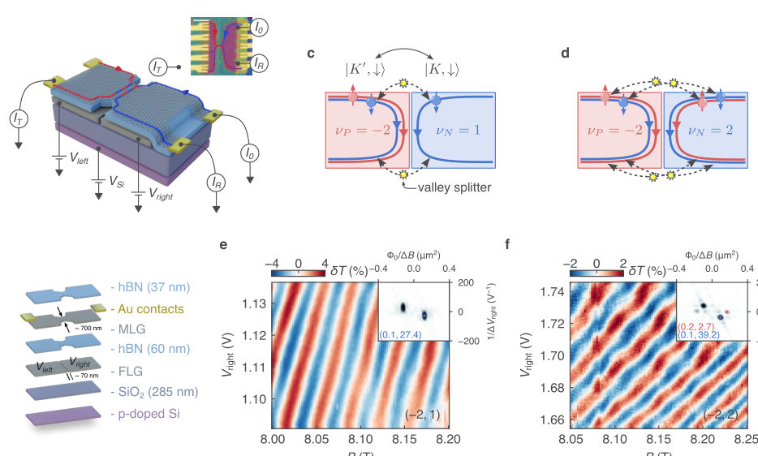
<figcaption class="paper-figure-caption"><b>Fig 1.</b> FIG. 1. Interferometric spin access in the integer QH regime. a,b, Schematic of the device. Monolayer graphene is encapsulated in hBN and placed on a patterned graphite gate split into two electrically isolated halves. Gate voltages Vleft and Vright independently tune the filling factors νP and νN in the left and right graphene regions, respectively. The graphite gates are separated by a 70 nm slit, while the carrier density is further fine-tuned by the doped Si/SiO2 (285 nm) back gate. The graphene is additionally etched above the slit, forming a 700 nm-wide constriction. c,d, Edge-channel configurations for (νP, νN) = (−2, 1) in c and (−2, 2) in d. e,f, AB oscillations of the differential...</figcaption>
</figure>
<figure class="paper-figure-card">
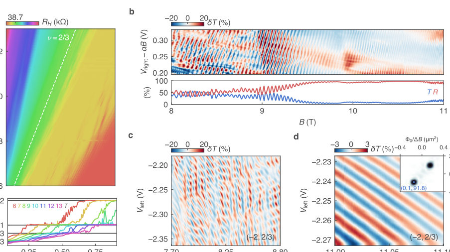
<figcaption class="paper-figure-caption"><b>Fig 2.</b> FIG. 2. Spin transition of the 2/3 edge. a, Upper panel: Two-point Hall resistance RH measured on the right side of the graphene device as a function of B and Vright. The νN = 2/3 state becomes well developed for B &gt; 6 T and is visible as a green region. Lower panel: Corresponding Hall conductance σH measured at selected magnetic fields. b, Upper panel: Differential transmission δT through the p-n junction at (νP, νN) = (−2, 2/3) as a function of B and the compensated gate voltage Vright −αB, with α ≈0.124 V/T accounting for the magnetic-field-induced shift of the 2/3 plateau. A sharp change occurs near B ≈9.5 T: The interference visibility is reduced and the pattern evolves from multiple...</figcaption>
</figure>
<figure class="paper-figure-card">
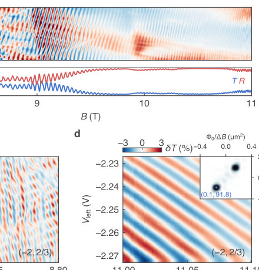
<figcaption class="paper-figure-caption"><b>Fig 3.</b> Figure 4b shows the expected interface channels at (νP, νN) = (−2, 2/3) in the spin-unpolarized regime. In the n region, an interface channel forms between the νN = 2/3 and ν = 0 regions. This channel is pre- dicted [12–15] to host a downstream charge mode and an upstream charge-neutral spin mode, hallmarks of spin- charge separation, when SU(2) symmetry is preserved. The resulting interferometer is not a conventional single-</figcaption>
</figure>
<figure class="paper-figure-card">
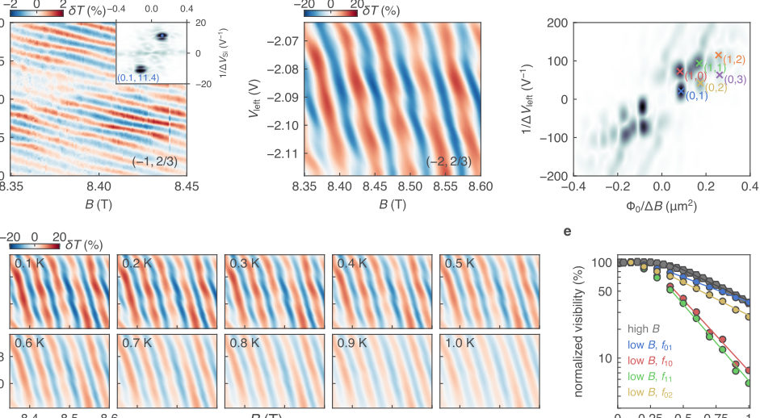
<figcaption class="paper-figure-caption"><b>Fig 4.</b> FIG. 3. Interference signatures of the spin-unpolarized νN = 2/3 edge. a, AB oscillations in the (νP, νN) = (−1, 2/3) regime at low magnetic fields, as a function of B and silicon-gate voltage VSi. Inset: FFT of the oscillations showing a single frequency (Φ0/∆B, 1/∆VSi) = (0.121 µm2, 11.4 V−1). b, AB oscillations at (νP, νN) = (−2, 2/3). c, FFT of the oscillations in b, showing multiple frequencies that are linear combinations of two frequencies f10 = (0.082 µm2, 72.8 V−1) and f01 =  fB/Φ0, fVleft  = (0.087 µm2, 21.2 V−1), labelled (1, 0) and (0, 1), respectively. Higher-order frequencies, labelled (n, m), satisfy fnm = nf10 + mf01. d, Temperature dependence of the AB oscillations under...</figcaption>
</figure>
<figure class="paper-figure-card">
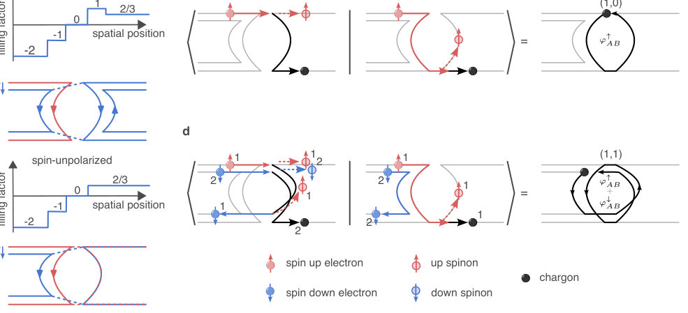
<figcaption class="paper-figure-caption"><b>Fig 5.</b> FIG. 4. Theoretical model. a,b, Spatial variation of the filling factor across the p-n interface (upper) and corresponding interface channels (lower panels) in the spin-polarized and unpolarized regimes for (νP, νN) = (−2, 2/3). Spin-up and spin-down channels are shown in red and blue, respectively, while the spin-unpolarized fractional channel is shown as alternating red and blue dashed lines. Electron tunneling between channels is depicted by dotted lines. c, An interference process contributing to f10 in the spin-unpolarized regime. The first two panels depict the interfering subprocesses, while the third shows their interference with a single winding. In each subprocess, a spin-up...</figcaption>
</figure>
</div>

<p><strong>Summary.</strong> This work reports on using Aharonov-Bohm interferometry in graphene to directly probe the spin structure of fractional quantum Hall edge states. By coupling the target FQH edge to a spin-polarized probe, the researchers distinguish between spin-unpolarized and spin-polarized regimes of the $\nu=2/3$ state. This establishes edge transport as a key diagnostic tool for understanding spin-singlet topological orders.</p>
<p><strong>Why it may be interesting.</strong> The ability to probe spin degrees of freedom in topological edge states using interferometry provides a powerful experimental tool for studying exotic quantum phases, which is highly relevant to understanding strongly correlated electron systems.</p>
<details>
<summary>Detailed structure</summary>
<p><strong>Main problem.</strong> The study aims to develop a spin-sensitive probe to characterize the spin-singlet topological order present in fractional quantum Hall (FQH) edge states, particularly the $\nu=2/3$ state.</p>
<p><strong>Main result.</strong> The authors successfully identified the spin-unpolarized and spin-polarized regimes of the $\nu=2/3$ edge state using Aharonov-Bohm interferometry, confirming the existence of spin-charge separation effects.</p>
<p><strong>Method.</strong> The primary method involves using a p-n junction to couple a target FQH edge state to a probe integer QH state, forming an Aharonov-Bohm interferometer whose interference pattern is spin-dependent.</p>
<p><strong>Model / system.</strong> The system is graphene exhibiting FQH edge states. The theoretical analysis models the edge using boson fields and investigates the transition between $SU(2)$-symmetric (unpolarized) and broken symmetry (polarized) regimes.</p>
<p><strong>Key observables.</strong> Aharonov-Bohm oscillation visibility, frequency components ($f_{nm}$), and the transition point in transmission ($\delta T$) between spin-unpolarized and spin-polarized states.</p>
<p><strong>Important parameters / regimes.</strong> Filling factors ($\nu=2/3$), magnetic field ($B$), and the ratio of spin-up/spin-down coupling strengths.</p>
<p><strong>Assumptions / limitations.</strong> The interference pattern is governed by spin matching between the probe and target channels; the theoretical analysis assumes specific velocity orderings and negligible intra-channel interactions.</p>
<p><strong>Figures summary.</strong> Figures illustrate device schematics, AB oscillation measurements showing single/dual MZI frequencies, and theoretical models detailing the spin-charge separation and fractionalization into downstream/upstream components.</p>
<p><strong>Paper structure.</strong> The paper moves from experimental demonstration of spin-sensitive probing via AB interferometry in graphene to theoretical analysis of the resulting interference patterns, confirming spin-charge separation and fractionalization across different symmetry regimes.</p>
</details>
<details>
<summary>Abstract</summary>
<p>The edge modes of spin-singlet fractional quantum Hall (FQH) phases are manifestations of multicomponent topological order and SU(2) spin symmetry. An archetype is the spin-unpolarized state at $ν$=2/3, whose edge is expected to host spatially coexisting yet counter-propagating charge and neutral spin modes. Despite efforts, its edge properties, including spin coherence and spin-charge separation, have remained elusive owing to the difficulty of resolving spins in FQH edge transport. Here, we develop a spin-sensitive probe of graphene FQH edges by using a p-n junction to interface a target FQH state with a probe integer quantum Hall (QH) state of opposite polarity. An Aharonov-Bohm (AB) interferometer forms along the interface, when the target and probe edge channels carry the same spin. We identify the spin-unpolarized and polarized edges of the $ν$=2/3 states at lower and higher magnetic fields, respectively, through spin-dependent interference. A novel multiparticle AB interference between two electrons of opposite spin emerges from spin-charge separation and recombination on the unpolarized edge, featuring a spin swap. Our results establish edge transport as a probe of spin-singlet topological orders, with implications for parafermion platforms in graphene-superconductor hybrids.</p>
</details>
<p><sub><a href="#top">↑ back to top</a></sub></p>

<p><a id="paper-2609.01363"></a></p>
<h3 id="antiresonances-of-wannier-stark-ladders-in-su-schrieffer-heeger-lattices"><a href="http://arxiv.org/abs/2609.01363v1">Antiresonances of Wannier-Stark ladders in Su-Schrieffer-Heeger lattices</a></h3>
<p><strong>Authors:</strong> Yonatan Betancur-Ocampo, Guillermo Monsivais<br>
<strong>Type:</strong> theory · <strong>Category:</strong> other · <strong>PDF:</strong> <a href="https://arxiv.org/pdf/2609.01363v1">https://arxiv.org/pdf/2609.01363v1</a><br>
<strong>Analysis basis:</strong> full PDF text, analyzed in chunks
<strong>Topic relevance:</strong> <code>Frenkel-Kontorova</code> <strong>3/5</strong> · <code>analog quantum simulation</code> <strong>3/5</strong> · <code>methods for driven-dissipative</code> <strong>1/5</strong></p>
<div class="figure-strip-hint">↔ Scroll figures horizontally</div>
<div class="paper-figures-scroll">
<figure class="paper-figure-card">
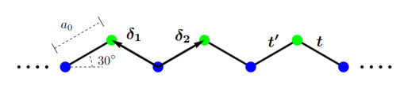
<figcaption class="paper-figure-caption"><b>Fig 1.</b> Figure 1. Schematic diagram of the Su-Schrieffer-Heeger (SSH) lattice. Blue and green circles represent the two dis- tinct sublattices, with black lines indicating nearest-neighbor bonds of length a0. The vectors δ1 = a0  − √</figcaption>
</figure>
<figure class="paper-figure-card">
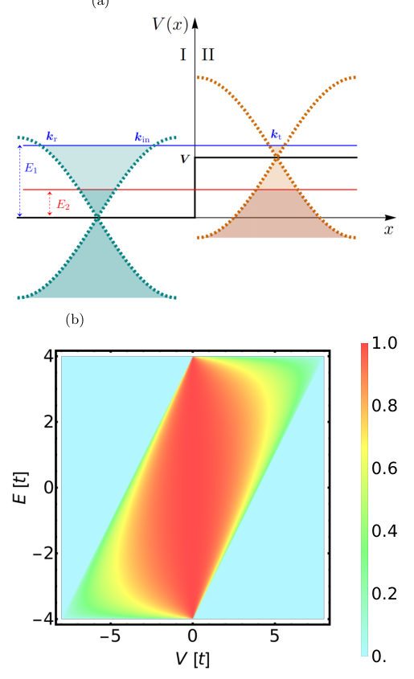
<figcaption class="paper-figure-caption"><b>Fig 2.</b> Figure 2. (a) Electronic band structure of a pn junction (dashed green and orange curves) based on the SSH lattice. The potential step V (x) shifts the energy bands in region II (orange dotted curves) relative to region I (green dotted curves) by an energy V . The energy bands depend on the wave number and not the position. For illustrative purposes, we have drawn the shape of the dispersion relation in the po- tential V (x). The horizontal blue and red lines represent two different energy levels, E1 and E2, respectively. At E1, the blue line illustrates a transmission process within the conduc- tion bands, with the incident (kin), reflected (kr), and trans- mitted (kt) wave numbers...</figcaption>
</figure>
<figure class="paper-figure-card">
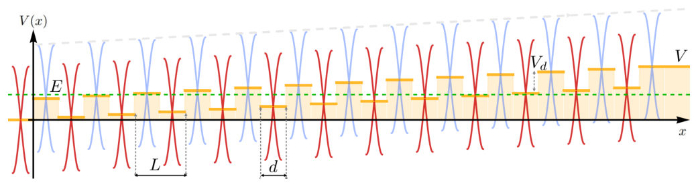
<figcaption class="paper-figure-caption"><b>Fig 3.</b> Figure 3. Schematic diagram of the local electronic band structure in the SSH lattice under a stratified potential mimicking a Wannier-Stark profile. The potential step structure (orange blocks) features a spatial period L, well width d, and well depth Vd. Red and light-blue curves illustrate the local valence and conduction bands of the SSH lattice, which shift upward along the chain. The dashed green line indicates the Fermi level E, and V denotes the constant potential in the outgoing region. The set of parameters are d = 10 (in units of the lattice constant a = 1), L = 20, electron charge e = 1, the electric field F = 0.01, the Fermi level E = 1.9, and V0 = 1.4, and hopping parameters t...</figcaption>
</figure>
<figure class="paper-figure-card">
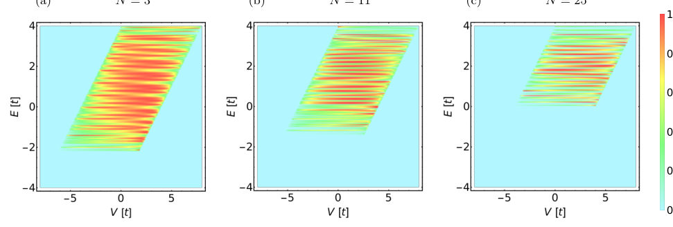
<figcaption class="paper-figure-caption"><b>Fig 4.</b> Figure 4. Electron transmission through a Su-Schriefer-Heeger lattice in the presence of a stratified Wannier-like potential, shown as a function of the Fermi energy E and the potential in the last region V , for (a) N = 3, (b) N = 11, and (c) N = 25. The set of parameters values of the tight-binding and Wannier-like potential are the same than in Fig. 3.</figcaption>
</figure>
<figure class="paper-figure-card">
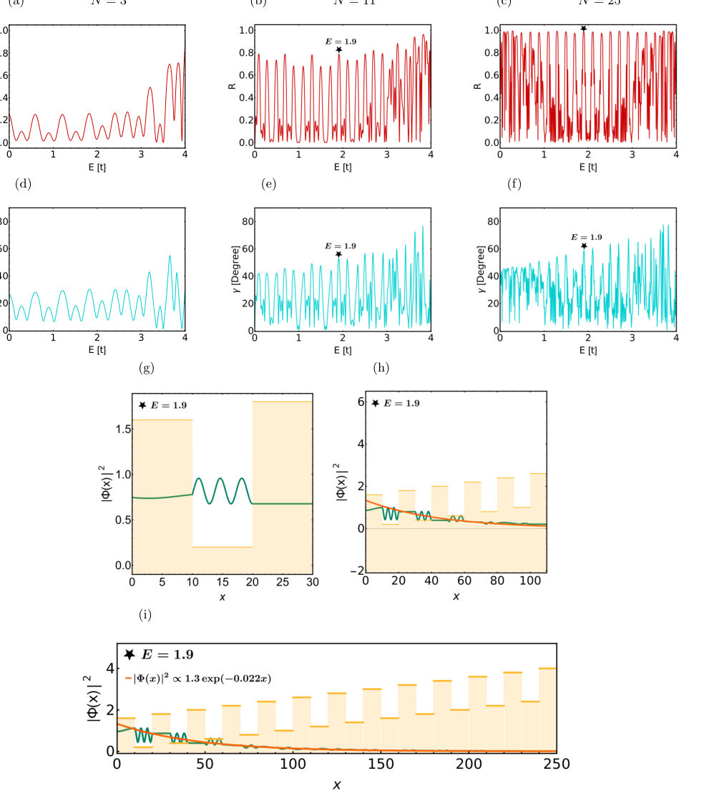
<figcaption class="paper-figure-caption"><b>Fig 5.</b> Figure 5. (a)-(c) Reflection coefficient as a function of the energy E for N = 3, 11, and 25, the antiresonances are evidenced and their relative energy separation is FL = 0.2. (d)-(e) Relative pseudospin as a function of the energy E, obtained from Eq. (26), for the reflections presented in (a)-(c). (g)-(i) Squared wave function (Eq. (24)) calculated using the matching conditions across the Wannier-like potential for the structure depicted in (a)-(c). The set of parameters values of the tight-binding and Wannier-like potential are the same than in Fig. 3. The black star indicates one of the twenty antiresonances at energy E = 1.9.</figcaption>
</figure>
</div>

<p><strong>Summary.</strong> This work analyzes quantum transport in SSH chains under an electric field, revealing that Wannier-Stark ladders appear as distinct antiresonance signatures in electron transmission. Using the Global Matrix Method, the authors show these antiresonances are linked to exponentially localized states. This provides a general tool for studying such phenomena across various condensed matter and wave physics systems.</p>
<p><strong>Why it may be interesting.</strong> The connection between topological features (SSH model) and transport phenomena (antiresonances) under a bias field is highly relevant to open quantum systems and engineered quantum transport devices.</p>
<details>
<summary>Detailed structure</summary>
<p><strong>Main problem.</strong> The paper demonstrates that Wannier-Stark ladders (WSLs) in Su-Schrieffer-Heeger (SSH) chains manifest as antiresonance signatures in electron transmission.</p>
<p><strong>Main result.</strong> These WSL antiresonances are found to correspond to states that are exponentially localized at the potential's incident boundary, providing a unified framework for identifying such features.</p>
<p><strong>Method.</strong> The Global Matrix Method (GMM) is employed to solve the Schrödinger equation for quantum transport across stratified electrostatic potentials.</p>
<p><strong>Model / system.</strong> The system models quantum transport in a one-dimensional SSH chain subjected to a periodic potential profile combined with a uniform electric field.</p>
<p><strong>Key observables.</strong> Electron transmission coefficient (T), reflection coefficient (R), and the relative pseudospin angle (gamma).</p>
<p><strong>Important parameters / regimes.</strong> The electric field strength (F), hopping parameters (t, t'), and the energy (E) relative to the potential profile.</p>
<p><strong>Assumptions / limitations.</strong> The analysis assumes wavefunctions are free of singularities when taking the limit epsilon -&gt; 0.</p>
<p><strong>Figures summary.</strong> Figures illustrate the SSH lattice structure, electronic band structure in junctions, and transmission spectra showing the characteristic antiresonances.</p>
<p><strong>Paper structure.</strong> The paper introduces the SSH model and the problem setup, details the Global Matrix Method for calculating transmission, presents the main results showing the antiresonances, and concludes by generalizing the findings to other physical systems.</p>
</details>
<details>
<summary>Abstract</summary>
<p>We demonstrate that Wannier-Stark ladders (WSLs) in one-dimensional Su-Schrieffer-Heeger (SSH) chains manifest as antiresonance signatures in the electron transmission. We study the quantum transport in the SSH chain in the presence of a periodic potential profile plus a uniform electric field. By employing the global matrix method with non-trivial matching conditions, we find that these WSL antiresonances correspond to states that are exponentially localized at the potential's incident boundary. These findings provide a robust, unified framework for identifying WSLs across diverse scales, ranging from electronic transport in trans-polyacetylene to classical-wave analogs in phononic crystals and surface water waves.</p>
</details>
<p><sub><a href="#top">↑ back to top</a></sub></p>

<p><a id="paper-2609.01243"></a></p>
<h3 id="multiple-chiral-majorana-states-in-proximitized-magnetic-topological-insulator-heterostructures"><a href="http://arxiv.org/abs/2609.01243v1">Multiple chiral Majorana states in proximitized magnetic topological insulator heterostructures</a></h3>
<p><strong>Authors:</strong> Alejandro S. Gómez, Rafael A. Molina, Pablo Burset, Yuriko Baba<br>
<strong>Type:</strong> theory · <strong>Category:</strong> other · <strong>PDF:</strong> <a href="https://arxiv.org/pdf/2609.01243v1">https://arxiv.org/pdf/2609.01243v1</a><br>
<strong>Analysis basis:</strong> full PDF text, analyzed in chunks
<strong>Topic relevance:</strong> <code>analog quantum simulation</code> <strong>3/5</strong> · <code>Keldysh / 2PI / non-Gaussian methods</code> <strong>2/5</strong> · <code>methods for driven-dissipative</code> <strong>2/5</strong></p>
<div class="figure-strip-hint">↔ Scroll figures horizontally</div>
<div class="paper-figures-scroll">
<figure class="paper-figure-card">
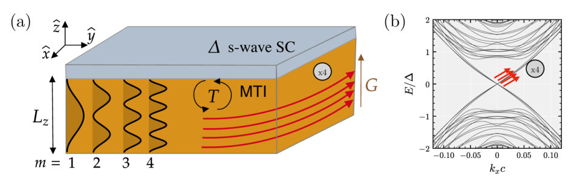
<figcaption class="paper-figure-caption"><b>Fig 1.</b> Figure 1: Quantum-well origin of multiple chiral Majorana channels. (a) Schematic of a magnetically doped TI slab proximitized by an s-wave superconductor. Confinement along ˆz produces transverse modes m = 1, . . . , 4; the red arrows represent the resulting co-propagating chiral Majorana channels on a lateral boundary. (b) Low-energy BdG spectrum E/∆versus in-plane momentum kxc for a slab periodic along ˆx and finite along ˆy and ˆz, with Ly/c = 150 and Lz/c = 20. The red arrows highlight four co-propagating subgap branches on one boundary; the opposite boundary hosts the counter-propagating partners.</figcaption>
</figure>
<figure class="paper-figure-card">
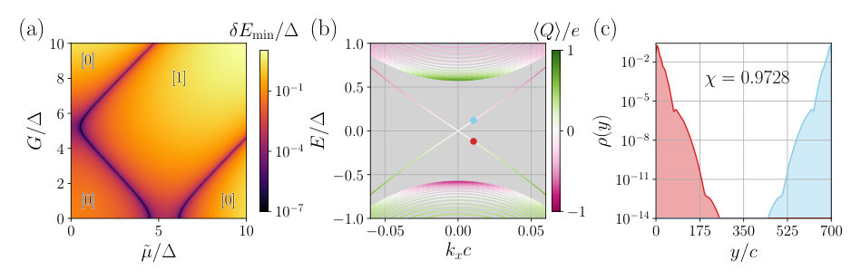
<figcaption class="paper-figure-caption"><b>Fig 2.</b> Figure 2: Bulk phase diagram and chiral Majorana edge modes of the superconducting BHZ ribbon. (a) Bulk phase map in the dimensionless (˜µ/∆, G/∆) plane at fixed inversion- breaking term T/∆= 4.5. The colour scale shows the smallest absolute BdG eigenenergy δEmin/∆, obtained by numerical diagonalization, while the black contours are the analytical gap-closing boundaries of Eq. (3.2). The labels [|C|] indicate the absolute value of the region Chern number. (b) Spectrum of a ribbon periodic along ˆx and finite along ˆy, with width Ly/c = 700 for fixed (˜µ/∆, G/∆) = (1.0, 4.6). The bands are coloured by the normalized charge expectation ⟨Q⟩/e defined in Eq. (2.14). (c) Probability density ρ(y)...</figcaption>
</figure>
<figure class="paper-figure-card">
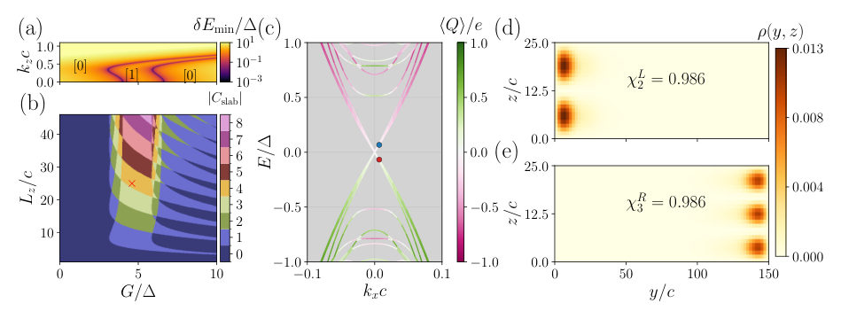
<figcaption class="paper-figure-caption"><b>Fig 3.</b> Figure 3: High-Chern-number superconducting slab and representative Majorana modes. (a, b) Phase diagrams for the vertically stacked HBdG(k) with B = 0, Eq. (2.1), as a function of the dimensionless Zeeman field G/∆at fixed T/∆= 4.5. (a) Minimum bulk gap δEmin(kz, G)/∆as a function of the momentum kzc for a system periodic in all spatial directions, in a logarithmic color scale where dark contours indicate bulk gap closings. (b) Total Chern number |Cslab| for a slab with finite thickness Lz/c. The red cross marks the parameters G/∆= 4.6 and Lz/c = 25 used in panels (c-e). (c) Low-energy spectrum of the corresponding slab periodic along the ˆx direction and finite along ˆy and ˆz, with Ly/c...</figcaption>
</figure>
<figure class="paper-figure-card">
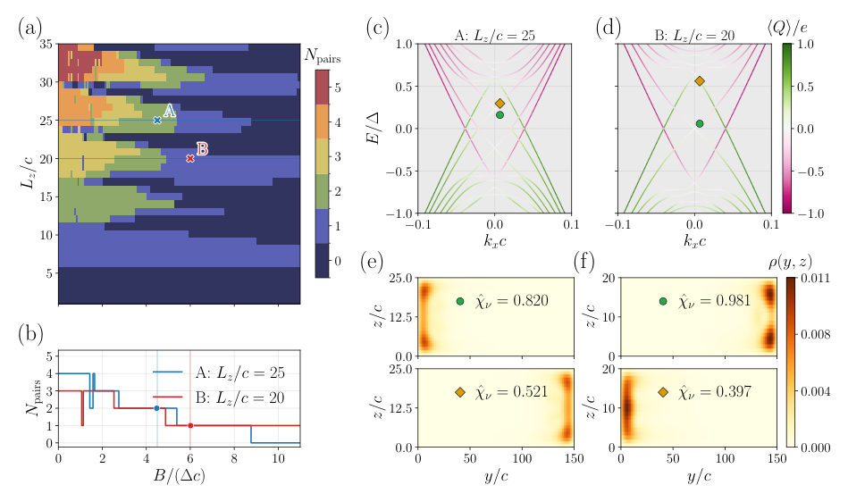
<figcaption class="paper-figure-caption"><b>Fig 4.</b> Figure 4: Effect of the linear kz term on the multiplicity of Majorana pairs. (a) Numerical pair-count map as a function of slab thickness Lz/c and linear coefficient B/(∆c), for fixed Ly/c = 150, T/∆= 4.5 and |G|/∆= 4.6. The colour scale represents Npairs, obtained from the low-energy states at kxc ≃6.7 × 10−3. A state contributes to the count when its Majorana polarization satisfies ˆχν &gt; 0.5 and its charge expectation value obeys |⟨Q⟩| &lt; 0.1e. The blue and red crosses mark the representative points A and B. (b) Cuts of the map in panel (a) at the two selected slab thicknesses. Point A corresponds to B/(∆c) = 4.5, Lz/c = 25 and Npairs = 2, whereas point B corresponds to B/(∆c) = 6, Lz/c =...</figcaption>
</figure>
<figure class="paper-figure-card">
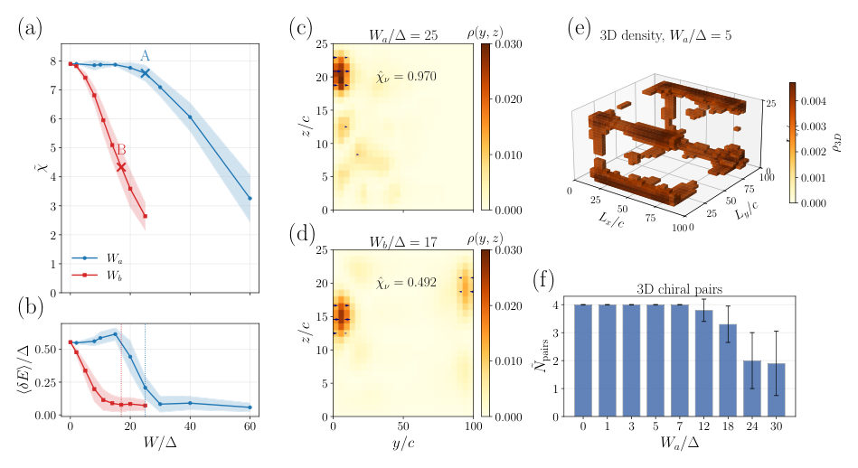
<figcaption class="paper-figure-caption"><b>Fig 5.</b> Figure 5: Disorder response of chiral Majorana modes in a semi-infinite and fully finite slab. (a) Disorder evolution of the total edge Majorana polarization ˜χ, Eq. (6.2), for the two disorder channels δHa and δHb in Eq. (6.1). Solid lines show the mean value over 30 disorder realizations and shaded regions indicate the standard deviation. We highlight the points A with Wa/∆= 25 and B with Wb/∆= 17. (b) Evolution of the finite-size low-energy gap proxy ⟨δE⟩/∆(the fifth-smallest absolute energy near zero) as a function of disorder amplitude. (c, d) Probability density ρ(y, z) of the selected low-energy states for points A and B, respectively, in a slab periodic along ˆx and finite along ˆy...</figcaption>
</figure>
</div>

<p><strong>Summary.</strong> This theoretical work investigates how to engineer multiple chiral Majorana modes in magnetic topological insulator heterostructures for topological quantum computing. By modeling the system using an extended 3D BHZ Hamiltonian, the authors show that magnetic effects and superconducting proximity can generate these robust channels. Furthermore, they establish that the superconducting phase difference acts as a key, tunable parameter controlling the number of accessible Majorana states.</p>
<p><strong>Why it may be interesting.</strong> The explicit inclusion of 3D confinement and the use of a full BdG Hamiltonian to control multiple channels makes this highly relevant for understanding engineered superconducting topological materials, bridging condensed matter theory with quantum information hardware.</p>
<details>
<summary>Detailed structure</summary>
<p><strong>Main problem.</strong> The central goal is to achieve robust topological superconductivity featuring multiple chiral Majorana channels, which is crucial for scalable topological quantum computing.</p>
<p><strong>Main result.</strong> The authors demonstrate that magnetic 3D topological insulator heterostructures can host multiple chiral Majorana modes, and the superconducting phase difference in a vertical junction can tune their effective multiplicity.</p>
<p><strong>Method.</strong> The study employs theoretical modeling using an extended 3D Bernevig-Hughes-Zhang (BHZ) Hamiltonian within the Bogoliubov-de Gennes framework.</p>
<p><strong>Model / system.</strong> The system is a magnetically doped 3D topological insulator heterostructure proximitized by an s-wave superconductor. The model explicitly incorporates vertical confinement and uses a complex 3D Hamiltonian containing terms for proximity pairing, Zeeman splitting, and orbital mixing.</p>
<p><strong>Key observables.</strong> Local Majorana polarization (MP), Majorana polarization indicator ($\chi_{
u}(\Omega)$), minimum excitation gap ($E_{min}$), and the effective multiplicity of low-energy Majorana channels.</p>
<p><strong>Important parameters / regimes.</strong> Magnetic exchange coupling, orbital mixing strength, superconducting phase difference ($\phi$), and the degree of vertical confinement (3D vs 2D limits).</p>
<p><strong>Assumptions / limitations.</strong> The analysis assumes the validity of the 3D BHZ model and notes that the pair counting rule is ill-defined at $k_x=0$, necessitating the use of gauge-invariant diagnostics.</p>
<p><strong>Figures summary.</strong> Figure 1 schematically illustrates the quantum-well origin of multiple chiral Majorana channels in the TI slab setup. Figure 10 summarizes the dependence of the minimum excitation gap and the pair count on the Josephson phase ($\phi$) and system size.</p>
<p><strong>Paper structure.</strong> The paper builds from establishing the full 3D Hamiltonian, analyzing the system in various limits (2D, quantum-well), deriving diagnostic tools like Majorana polarization, and finally demonstrating the tunability of the Majorana modes using a vertical Josephson junction.</p>
</details>
<details>
<summary>Abstract</summary>
<p>Achieving robust topological superconductivity with multiple Majorana channels is a key step for scalable topological quantum computing. To this end, we investigate magnetically doped three-dimensional topological insulator heterostructures proximitized by an s-wave superconductor within a fully three-dimensional extended Bernevig-Hughes-Zhang framework that explicitly accounts for vertical confinement. We show that magnetic exchange coupling, orbital mixing, and bulk band inversion cooperate to generate effective equal-spin p-wave pairing channels supporting multiple chiral Majorana modes. The number of Majorana channels is determined by the confined modes in the vertical direction and the high-Chern-number phases of the normal state, which allows us to derive an analytical criterion for the emergence of the multiple-Majorana topological superconducting phases. The chiral Majorana modes remain robust against strong disorder and moderate symmetry-breaking perturbations. We also demonstrate that a superconducting phase difference defining a vertical Josephson junction acts as a tunable parameter that controls the hybridization, minigap, and effective multiplicity of the low energy Majorana channels. Our results establish magnetic three-dimensional topological- insulator heterostructures as a promising platform for engineering multiple chiral Majorana modes.</p>
</details>
<p><sub><a href="#top">↑ back to top</a></sub></p>

<p><a id="paper-2609.01223"></a></p>
<h3 id="geometry-controlled-magnetic-and-electronic-landscapes-in-anisotropic-van-der-waals-materials"><a href="http://arxiv.org/abs/2609.01223v1">Geometry-Controlled Magnetic and Electronic Landscapes in Anisotropic van der Waals Materials</a></h3>
<p><strong>Authors:</strong> Maciej Śmiertka, Ewelina Cybula, Oliwia Janikowska, Bartosz Hołyński, Gayatri, Grzegorz Krasucki, Mariusz Hasiak, Kseniia Mosina, Zdenek Sofer, Adam Babiński, Maciej R Molas, Paulina Plochocka, Michał Baranowski<br>
<strong>Type:</strong> experiment · <strong>Category:</strong> other · <strong>PDF:</strong> <a href="https://arxiv.org/pdf/2609.01223v1">https://arxiv.org/pdf/2609.01223v1</a><br>
<strong>Analysis basis:</strong> full PDF text, analyzed in chunks
<strong>Topic relevance:</strong> <code>analog quantum simulation</code> <strong>3/5</strong> · <code>driven-dissipative phase transition</code> <strong>1/5</strong> · <code>quantum measurements</code> <strong>1/5</strong></p>
<div class="figure-strip-hint">↔ Scroll figures horizontally</div>
<div class="paper-figures-scroll">
<figure class="paper-figure-card">
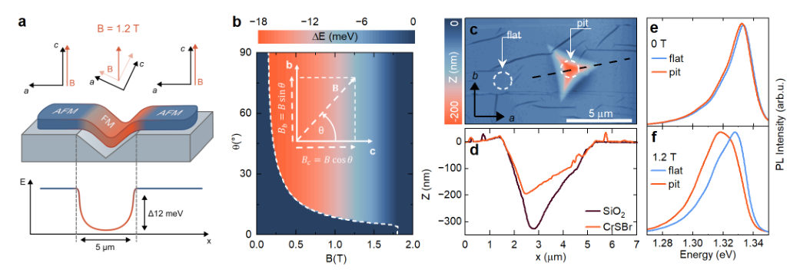
<figcaption class="paper-figure-caption"><b>Fig 1.</b> FIG. 1. Concept of geometronics and sample topography with magneto-optical characterization of a CrSBr bilayer transferred onto a nanoindentation pit. a, Schematic illustration of a CrSBr bilayer conforming to the substrate topography under an external magnetic field applied along the crystallographic c-axis of the flat region, showing the emergence of a local ferromagnetic phase in the reoriented part of the flake together with the corresponding excitonic energy landscape. b, Calculated energy difference between the excitonic ground-state transition of the flat and reoriented regions of the CrSBr flake, ∆E = Eflat −Epit, as a function of the applied magnetic field for field rotations...</figcaption>
</figure>
<figure class="paper-figure-card">
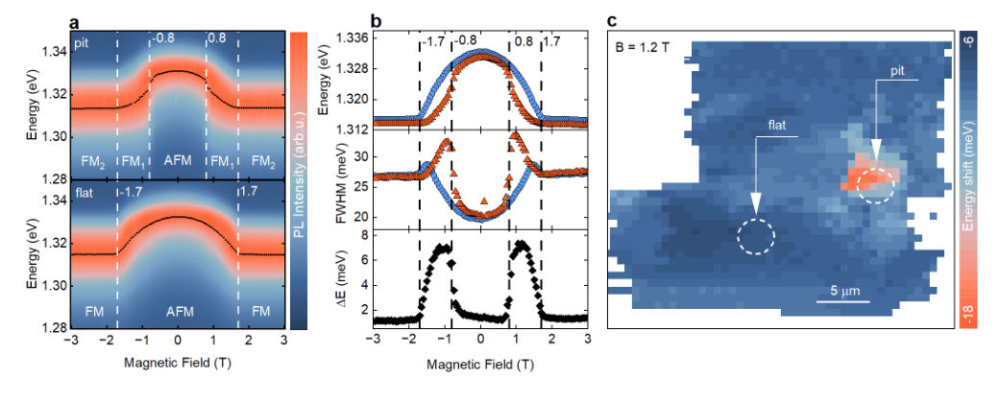
<figcaption class="paper-figure-caption"><b>Fig 2.</b> FIG. 2. Magnetic-field control of the excitonic landscape. a, False-colour maps showing the evolution of the low- temperature (∼10 K) PL spectra with magnetic field for the flat and pit regions of the CrSBr bilayer. The magnetic field is applied along the crystallographic c-axis of the flat region. Black symbols mark the PL peak position. b, Magnetic-field dependence of the PL peak energy (top), PL linewidth (middle), and energy difference between the reoriented and flat regions, ∆E = Eflat −Epit (bottom). In the top and middle panels, blue circles and orange triangles correspond to the flat and pit regions, respectively. c Spatial map of the photoluminescence (PL) energy shift between 0...</figcaption>
</figure>
<figure class="paper-figure-card">
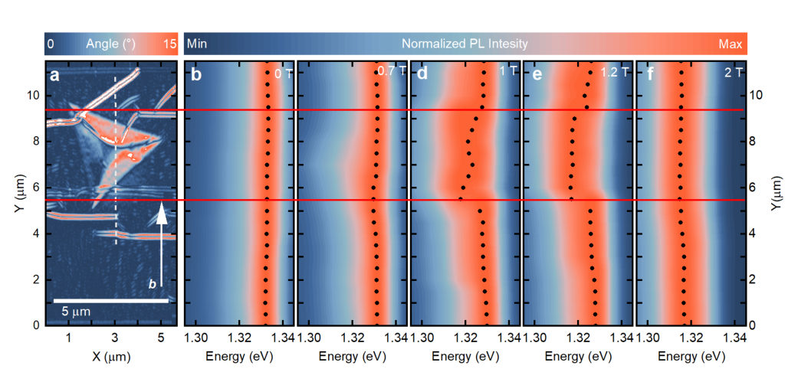
<figcaption class="paper-figure-caption"><b>Fig 3.</b> FIG. 3. Spatially resolved excitonic landscape. a, False-colour map of the absolute local tilt angle of the CrSBr bilayer extracted from the atomic force microscopy topography, measured along the crystallographic b-axis with respect to its orientation in the flat region of the substrate. The vertical dashed line indicates the position of the photoluminescence (PL) line scan shown in b-f, while the horizontal solid red lines mark the lateral boundaries of the nanoindentation. b–f, False-colour maps of the low-temperature (∼10 K) PL spectra acquired along the crystallographic b-axis under magnetic fields of 0, 0.7, 1.0, 1.2 and 2.0 T applied along the crystallographic c-axis of the flat...</figcaption>
</figure>
</div>

<p><strong>Summary.</strong> This work introduces 'geotronics,' a method that uses substrate topography to locally reorient anisotropic van der Waals materials like CrSBr. By conforming the material to patterned substrates, the authors demonstrate that a uniform external field can create spatially varying magnetic and electronic landscapes. This establishes substrate geometry as a powerful, non-invasive design principle for creating tunable quantum functionalities.</p>
<p><strong>Why it may be interesting.</strong> The ability to program quantum properties (like excitonic potentials or magnetic order) using purely geometric control, rather than chemical doping or junction fabrication, offers a novel platform for realizing tunable quantum devices.</p>
<details>
<summary>Detailed structure</summary>
<p><strong>Main problem.</strong> To achieve dynamic, on-demand, and position-dependent control over the electronic and magnetic structure of materials, moving beyond fixed properties set during fabrication.</p>
<p><strong>Main result.</strong> The substrate topography can deterministically program local magnetic and electronic landscapes, creating switchable excitonic potential wells within a single, continuous crystal.</p>
<p><strong>Method.</strong> The study uses the concept of 'geotronics,' where the mechanical conformability of anisotropic van der Waals materials is exploited by transferring them onto substrates with controlled topography (e.g., nanoindentation pits).</p>
<p><strong>Model / system.</strong> The system studied is a bilayer of the antiferromagnetic semiconductor CrSBr. The key principle relies on the material's intrinsic anisotropy and mechanical compliance to the substrate geometry.</p>
<p><strong>Key observables.</strong> Spatially resolved photoluminescence (PL) spectra, energy contrast ($\Delta E$) between flat and inclined regions, and local magnetic phase coexistence.</p>
<p><strong>Important parameters / regimes.</strong> Local crystal tilt angle ($ heta \approx 10^\circ–20^\circ$), applied magnetic field ($B$), and the resulting excitonic energy contrast ($\sim 10–12     ext{ meV}$).</p>
<p><strong>Assumptions / limitations.</strong> The approach assumes the material is mechanically compliant enough to conform to the substrate topography and that the electronic/magnetic response is highly sensitive to local crystal orientation.</p>
<p><strong>Figures summary.</strong> Figures illustrate the concept of geometronics using nanoindentation pits, showing PL spectra maps and line scans that demonstrate the field-dependent energy contrast and localized modulation of the excitonic potential.</p>
<p><strong>Paper structure.</strong> The paper introduces the concept of geometronics, demonstrates its feasibility using CrSBr on nanoindented substrates via PL spectroscopy, and concludes by establishing substrate topography as a universal design principle for programming electronic and magnetic functionalities.</p>
</details>
<details>
<summary>Abstract</summary>
<p>Electronic structure in van der Waals materials is commonly engineered through composition, strain, electrostatic gating and heterostructure assembly. Here we introduce geometronics, a concept in which substrate geometry locally reorients an anisotropic crystal, transforming homogeneous external perturbation into programmable magnetic and electronic landscapes. We demonstrate this concept using a bilayer of the antiferromagnetic semiconductor CrSBr transferred onto an inverted pyramidal nanoindentation, where the local crystal orientation with respect to the external magnetic field drives the coexistence of antiferromagnetic and ferromagnetic phases within a single continuous crystal. The resulting magnetic landscape creates a switchable excitonic potential well of up to 10--12 meV, directly visualised by spatially resolved spectroscopy. More generally, geometronics provides a universal route for deterministically programmed electronic and magnetic landscapes without modifying the material itself. It therefore establishes substrate topography as a new design principle that exploits the intrinsic anisotropy of layered van der Waals materials.</p>
</details>
<p><sub><a href="#top">↑ back to top</a></sub></p>

<p><a id="paper-2609.00146"></a></p>
<h3 id="how-landau-caterpillars-turn-into-hofstadter-butterflies-by-tuning-the-periodic-potential-strength"><a href="http://arxiv.org/abs/2609.00146v1">How Landau caterpillars turn into Hofstadter butterflies by tuning the periodic potential strength</a></h3>
<p><strong>Authors:</strong> Ivo A. Gabrovski, Louk Rademaker<br>
<strong>Type:</strong> theory · <strong>Category:</strong> other · <strong>PDF:</strong> <a href="https://arxiv.org/pdf/2609.00146v1">https://arxiv.org/pdf/2609.00146v1</a><br>
<strong>Analysis basis:</strong> full PDF text, analyzed in chunks
<strong>Topic relevance:</strong> <code>analog quantum simulation</code> <strong>3/5</strong> · <code>Frenkel-Kontorova</code> <strong>2/5</strong></p>
<div class="figure-strip-hint">↔ Scroll figures horizontally</div>
<div class="paper-figures-scroll">
<figure class="paper-figure-card">
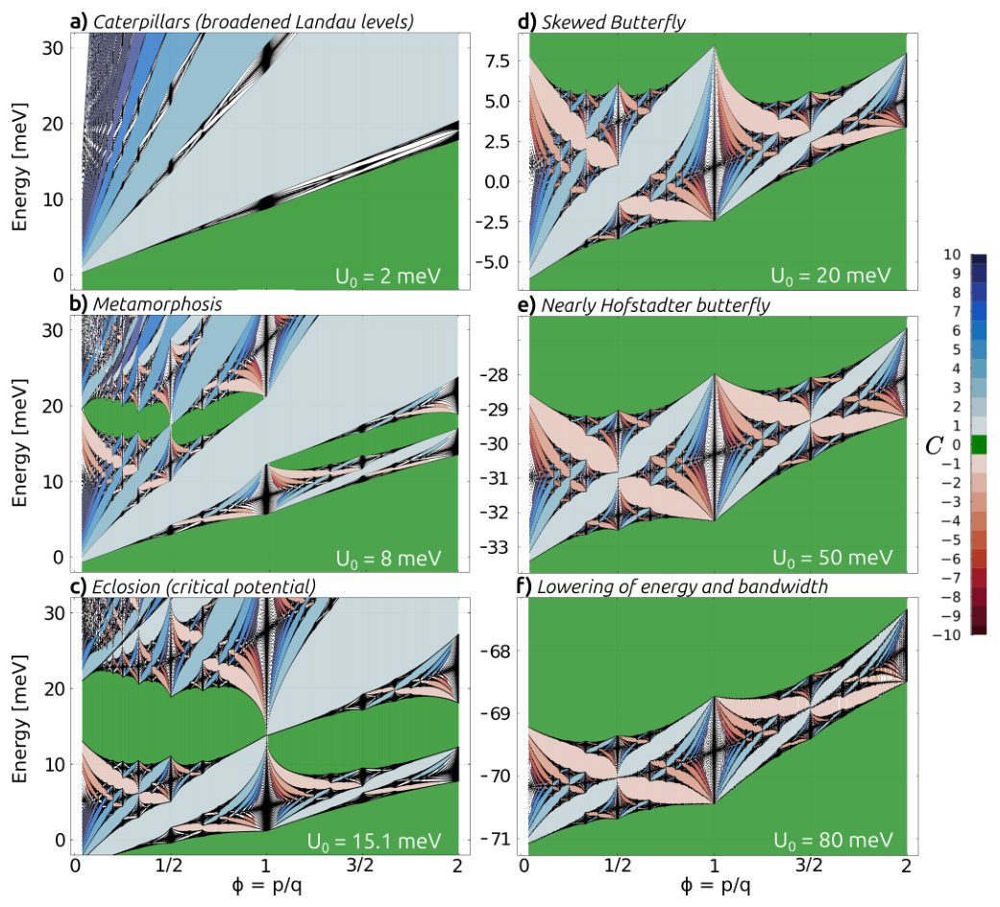
<figcaption class="paper-figure-caption"><b>Fig 1.</b> FIG. 1. Low-energy spectra for increasing periodic-potential strengths U0 = 2, 8, 15.1, 20, 50, and 80 meV, in reading order. Black dots denote the physical states, and the color of each gap indicates the cumulative Chern number of the bands below it. Panels (a)–(c) show the gradual broadening and hybridization of the Landau levels into a lowest Hofstadter-like band separated from the rest of the spectrum. Panel (c) is at the critical potential strength, above which a topologically trivial gap remains open at all fluxes. Panels (d)–(f) focus on this isolated lowest band.</figcaption>
</figure>
<figure class="paper-figure-card">
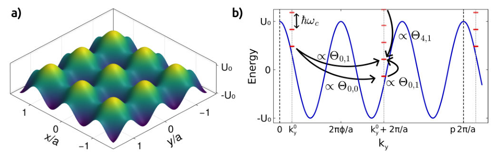
<figcaption class="paper-figure-caption"><b>Fig 2.</b> FIG. 2. (a) Periodic potential U(x, y). (b) Effective one-dimensional hopping chain in momentum ky (or position x) for k0 y = 0, obtained from the Hamiltonian in Eq. (17). The blue curve is the on-site potential induced by U(x, y), and the red lines are the available energy states.</figcaption>
</figure>
<figure class="paper-figure-card">
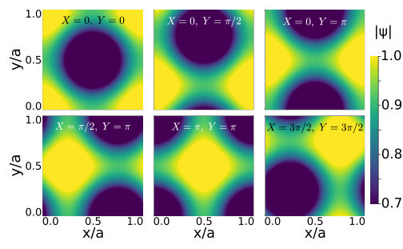
<figcaption class="paper-figure-caption"><b>Fig 3.</b> FIG. 3. Density of an unmixed lowest-Landau-level exact an- alytical solution at ϕ = 1 for a few selected eigenstates with different momentum quantum numbers X and Y , demonstrat- ing that the these quantum numbers also relate to a real space guiding center.</figcaption>
</figure>
<figure class="paper-figure-card">
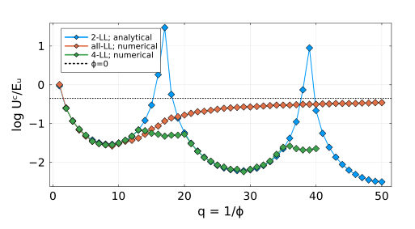
<figcaption class="paper-figure-caption"><b>Fig 4.</b> FIG. 4. Critical potential strength U c 0 on a logarithmic scale for a range of fluxes ϕ = 1/q. Above U c 0, a topologically trivial gap separates the lowest Hofstadter-butterfly-like band from the rest of the spectrum.</figcaption>
</figure>
<figure class="paper-figure-card">
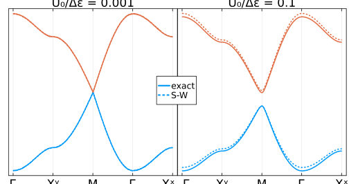
<figcaption class="paper-figure-caption"><b>Fig 5.</b> FIG. 5. Energy dispersion of the lowest Landau level at ϕ = 2 along a selected high-symmetry path in the Brillouin zone. The solid line is the exact result obtained with ten Landau levels, and the dotted line is the two-Landau-level Schrieffer– Wolff approximation.</figcaption>
</figure>
</div>

<p><strong>Summary.</strong> This work bridges the gap between the simple Landau level spectrum and the complex Hofstadter butterfly by tuning the strength of a periodic potential. The authors show that the butterfly emerges from broadened Landau 'caterpillars' through specific topological transitions. This has implications for understanding electronic properties in engineered systems like moiré materials under strong magnetic fields.</p>
<p><strong>Why it may be interesting.</strong> The connection between magnetic quantization (Landau levels) and lattice periodicity (Hofstadter) is fundamental to understanding artificial quantum materials like moiré systems, making it highly relevant for condensed matter theorists.</p>
<details>
<summary>Detailed structure</summary>
<p><strong>Main problem.</strong> The paper aims to connect the two distinct limits of electron spectra in 2D: the discrete Landau levels (in a strong magnetic field) and the fractal Hofstadter butterfly spectrum (in a periodic potential).</p>
<p><strong>Main result.</strong> It demonstrates that the butterfly spectrum emerges from broadened Landau 'caterpillars' by continuously increasing the periodic potential strength, revealing topological transitions along the way.</p>
<p><strong>Method.</strong> The study employs numerical exact diagonalization, Wannierization procedures, and analysis of topological invariants like Chern numbers to track the spectral evolution.</p>
<p><strong>Model / system.</strong> The system is modeled by 2D electrons subjected to both a perpendicular magnetic field and a periodic potential, described by a Hamiltonian that transitions between the Landau gauge and a tight-binding form.</p>
<p><strong>Key observables.</strong> Spectrum evolution (caterpillars to butterflies), Chern numbers, and the flux-dependent hopping parameters of the effective tight-binding model.</p>
<p><strong>Important parameters / regimes.</strong> The magnetic flux $\phi = B a^2 / \Phi_0$, the periodic potential strength $U_0$, and the ratio of energy scales ($\hbar\omega_c$ vs. $E_U$).</p>
<p><strong>Assumptions / limitations.</strong> The analysis often relies on the assumption of rational fluxes ($\phi = p/q$) to define a finite magnetic unit cell for diagonalization.</p>
<p><strong>Figures summary.</strong> Figures illustrate the spectral evolution from Landau levels to butterflies (Fig. 1), the periodic potential structure (Fig. 2), and the resulting effective 1D hopping chains.</p>
<p><strong>Paper structure.</strong> The paper progresses by first establishing the continuum Hamiltonian, then developing methods using magnetic translation operators for rational fluxes, and finally deriving an effective tight-binding model whose parameters depend critically on the magnetic flux.</p>
</details>
<details>
<summary>Abstract</summary>
<p>It is well-known that the spectrum of two-dimensional electrons in a perpendicular magnetic field is given by discrete flat Landau levels. By contrast, electrons in a two-dimensional tight-binding model give rise to a fractal Hofstadter butterfly spectrum. In this paper, we connect these two opposite limits by showing how a butterfly spectrum emerges from broadened Landau `caterpillars', by continuously increasing the periodic potential strength. We identify a series of topological transitions that isolate a lowest trivial band, a necessary condition for the butterfly to emerge. The resulting butterfly is topologically distinct from the Hofstadter butterfly at fluxes $φ>1$, due to anomalous behavior of diagonal hopping. Moreover, the hopping parameters of an effective tight-binding model, obtained by a Wannierization procedure at large magnetic field, are highly dependent on the flux, revealing that Wannier orbitals themselves change under the applied magnetic field. Our methods and results are relevant for artificial materials, such as moiré systems, where a full quantum of flux per lattice unit cell is experimentally accessible. On a theoretical level, having Wannierization methods for each specific flux allows more accurate many-body calculations in large magnetic fields.</p>
</details>
<p><sub><a href="#top">↑ back to top</a></sub></p>

<p><a id="paper-2609.01155"></a></p>
<h3 id="helical-and-straight-solitons-induced-by-vortex-beams-with-off-axis-pivots-in-cubic-quintic-nonlinear-media"><a href="http://arxiv.org/abs/2609.01155v1">Helical and Straight Solitons Induced by Vortex Beams with Off-Axis Pivots in Cubic-Quintic Nonlinear Media</a></h3>
<p><strong>Authors:</strong> Jing Chen, Rongcao Yang, Boris A. Malomed<br>
<strong>Type:</strong> theory · <strong>Category:</strong> other · <strong>PDF:</strong> <a href="https://arxiv.org/pdf/2609.01155v1">https://arxiv.org/pdf/2609.01155v1</a><br>
<strong>Analysis basis:</strong> full PDF text, analyzed in chunks
<strong>Topic relevance:</strong> <code>interference shaping light</code> <strong>3/5</strong></p>
<div class="figure-strip-hint">↔ Scroll figures horizontally</div>
<div class="paper-figures-scroll">
<figure class="paper-figure-card">
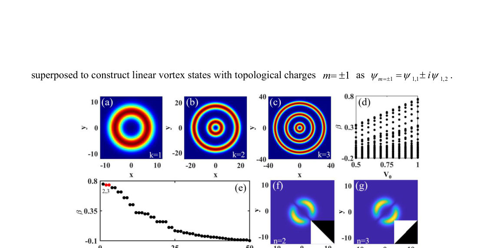
<figcaption class="paper-figure-caption"><b>Fig 1.</b> Fig. 1. The concentric ring potential with V0=1 for (a) k =1, r1=2π, d1=2.5; (b) k=2, r1=1.5π, r2=5.5π, d1,2=2.5; (c) k=3, r1=1.5π,</figcaption>
</figure>
<figure class="paper-figure-card">

<figcaption class="paper-figure-caption"><b>Fig 2.</b> Fig. 2. The field’s amplitude, Poynting vector, and phase structure of the single-ring vortex soliton with the topological charge</figcaption>
</figure>
<figure class="paper-figure-card">

<figcaption class="paper-figure-caption"><b>Fig 3.</b> Fig. 3. (a) The power for on-axis (blue) and off-axis (black and red) single-ring vortex solitons with V0 = 1.0. (b) The phase</figcaption>
</figure>
<figure class="paper-figure-card">

<figcaption class="paper-figure-caption"><b>Fig 4.</b> Fig. 3(d) represent the closed- and split-ring structures of off-axis vortex solitons, respectively, and the</figcaption>
</figure>
<figure class="paper-figure-card">

<figcaption class="paper-figure-caption"><b>Fig 5.</b> Fig. 4. Linear stability spectra and dynamics of off-axis vortex solitons: (a) β = 0.29, (b) β = 0.8, and (c) β = 0.95. Panels (a1),</figcaption>
</figure>
</div>

<p><strong>Summary.</strong> This paper theoretically examines complex soliton solutions—specifically helical and straight multi-core structures—formed by vortex beams propagating in a cubic-quintic nonlinear medium. By analyzing the impact of off-axis phase singularities and applying external torques, the authors demonstrate precise control over the soliton's structure and propagation characteristics. This is significant for understanding advanced light manipulation in nonlinear optical systems.</p>
<p><strong>Why it may be interesting.</strong> This work bridges nonlinear optics and soliton physics, providing detailed theoretical predictions about complex, structured light beams (vortex solitons) whose dynamics are controlled by geometric parameters (off-axis pivots) and external forces (torque).</p>
<details>
<summary>Detailed structure</summary>
<p><strong>Main problem.</strong> The study investigates the existence and dynamics of solitons propagating along helical and straight trajectories induced by vortex beams with off-axis pivots in cubic-quintic nonlinear media.</p>
<p><strong>Main result.</strong> The research predicts stable multi-ring, multi-core, and/or multi-split soliton structures, demonstrating that the helicity and propagation channels can be precisely tuned by applying an external torque.</p>
<p><strong>Method.</strong> The analysis involves solving the nonlinear Schrödinger equation numerically, utilizing linear stability analysis (eigenvalue problems) to confirm stability, and analyzing energy flow via the Poynting vector.</p>
<p><strong>Model / system.</strong> The system models optical beams propagating in a cubic-quintic (CQ) nonlinear medium, characterized by a single- or multi-ring potential. The dynamics are governed by the Nonlinear Schrödinger Equation (NLSE) incorporating the effects of off-axis vortex beam pivots.</p>
<p><strong>Key observables.</strong> Soliton structure (multi-ring, multi-core, split), helicity sign/period, linear eigenvalue spectra, and energy flow density.</p>
<p><strong>Important parameters / regimes.</strong> Potential depth ($V_0$), propagation constant ($eta$), topological charge ($m$), and applied angular velocity ($\Omega$).</p>
<p><strong>Assumptions / limitations.</strong> The analysis assumes the validity of the CQ nonlinearity model and relies on solving the linearized eigenvalue problem for stability assessment.</p>
<p><strong>Figures summary.</strong> Figures illustrate the concentric ring potentials, the field amplitude and Poynting vector for off-axis solitons, comparisons of power and stability for on-axis vs. off-axis states, and the field patterns under applied rotation.</p>
<p><strong>Paper structure.</strong> The paper progresses by establishing the governing NLSE, analyzing the effect of off-axis pivots on single-ring solitons, extending the analysis to multi-ring potentials, and finally demonstrating the co-existence and tunability of helical and straight propagation channels via external torque.</p>
</details>
<details>
<summary>Abstract</summary>
<p>We address the existence and dynamics of solitons propagating along helical (spiral-rotating) and straight trajectories in the bulk waveguide with the cubic-quintic nonlinearity and a single- or multi-ring potential. The input is taken as a vortex beam with a single or multiple phase singularities (pivots), displaced from the waveguide's axis. The single off-axis pivot creates a one-ring helical soliton, with a closed or open (split) ring structure. The vortex beams with multiple off-center pivots give rise to complex states with multi-ring, multi-core, and/or multi-split structures. The multi-core/split solitons propagate along helical channels, or straight ones, which are parallel to the propagation axis. The sign and period of the helicity can be precisely adjusted by applying a torque with an appropriate angular velocity.</p>
</details>
<p><sub><a href="#top">↑ back to top</a></sub></p>

<p><a id="paper-2609.01124"></a></p>
<h3 id="helium-gas-cooled-cryogenic-current-comparator-integrated-with-a-quantum-resistance-standard"><a href="http://arxiv.org/abs/2609.01124v1">Helium-Gas-Cooled Cryogenic Current Comparator Integrated with a Quantum Resistance Standard</a></h3>
<p><strong>Authors:</strong> Yuma Okazaki, Takehiko Oe, Nobu-Hisa Kaneko<br>
<strong>Type:</strong> experiment · <strong>Category:</strong> other · <strong>PDF:</strong> <a href="https://arxiv.org/pdf/2609.01124v1">https://arxiv.org/pdf/2609.01124v1</a><br>
<strong>Analysis basis:</strong> full PDF text, analyzed in chunks
<strong>Topic relevance:</strong> <code>quantum measurements</code> <strong>3/5</strong></p>
<div class="figure-strip-hint">↔ Scroll figures horizontally</div>
<div class="paper-figures-scroll">
<figure class="paper-figure-card">

<figcaption class="paper-figure-caption"><b>Fig 1.</b> Fig. 1. The developed helium-gas-cooled CCC. (a) Photograph of the CCC probe. The circled inset shows an enlarged view of the thermal anchor. (b) Cutaway schematic of the helium-gas chamber installed in a cryogen-free refrigerator. (c) Exterior view of the assembled gas chamber. (d) Interior view of the gas chamber installed inside the refrigerator. The upper and lower red-boxed insets show partially assembled views of the first-stage and second-stage thermal anchor structures, respectively.</figcaption>
</figure>
<figure class="paper-figure-card">

<figcaption class="paper-figure-caption"><b>Fig 2.</b> Fig. 2. Helium gas pressure dependence of the system performance. (a, b) Temperatures of the first stage (a) and second stage (b) as a function of the helium gas pressure in the chamber. (c) Peak-to-peak amplitude of the SQUID ϕ-V curve as a function of helium gas pressure. The dashed line indicates the typical ϕ-V amplitude of 88 mV obtained for the same CCC under liquid-helium cooling. The red triangle and green square correspond to the measurements at 0.3 Pa and 31 Pa, respectively, whose ϕ-V curves are shown in the inset. Inset: amplified SQUID output voltage as a function of flux bias measured before helium-gas introduction (Before He), and after helium- gas introduction at chamber...</figcaption>
</figure>
<figure class="paper-figure-card">

<figcaption class="paper-figure-caption"><b>Fig 3.</b> Fig. 4. Integration of a CCC and a quantum Hall resistance (QHR) device within a single refrigerator. (a) Photograph of the refrigerator setup. The QHR device is mounted at the field center of a superconducting magnet, approximately 800 mm below the CCC probe. The gas chamber was covered with a magnetic shield. (b) Hall resistance and longitudinal resistance of the QHR device as a function of magnetic field, showing the development of the quantum Hall state. (c) Stray magnetic field measured near the position of the CCC probe head as a function of the magnetic field applied to the QHR device.</figcaption>
</figure>
<figure class="paper-figure-card">

<figcaption class="paper-figure-caption"><b>Fig 4.</b> Fig. 3. Measurements of 10 kΩ/100 Ωresistance ratio using the 4000:40 winding configuration. (a) Results of 2000 consecutive measurements of the bridge voltage difference plotted as a function of measurement index at a helium gas pressure of 27 Pa. (b) Histogram of the measurement results shown in (a) together with a Gaussian fit. (c) Allan deviation of the measured resistance ratio. The colored symbols represent measurements performed with the CCC operated in the helium-gas chamber at pressures of 20 Pa, 27 Pa, 40 kPa, and 50 kPa. The black squares represent reference data obtained using the same CCC cooled by liquid helium. Error bars indicate the 68.3 % confidence intervals obtained from...</figcaption>
</figure>
<figure class="paper-figure-card">

<figcaption class="paper-figure-caption"><b>Fig 5.</b> Fig. 5. Measurements of QHR/100 Ωresistance ratio using the 4001:31 winding configuration. (a) Results of 1000 consecutive measurements of the bridge voltage difference plotted as a function of data point number at a helium gas pressure of 20 Pa. (b) Histogram of the measurement results shown in (a) together with a Gaussian fit. (c) Allan deviation of the measured QHR/100 Ω resistance ratio. The squares and circles represent data obtained with the CCC operated under helium-gas cooling and liquid-helium cooling, respectively. Error bars indicate the 68.3 % confidence intervals obtained from a chi-square analysis. The dashed line shows the white-noise dependence (∝τ −1/2).</figcaption>
</figure>
</div>

<p><strong>Summary.</strong> This paper reports the successful development of a cryogenic current comparator (CCC) that operates using helium gas instead of liquid helium. The system maintains high measurement precision, comparable to liquid-helium standards, and is successfully integrated with a Quantum Hall Resistance standard. This advancement significantly improves the practicality and sustainability of high-precision resistance metrology.</p>
<p><strong>Why it may be interesting.</strong> While the core physics is metrology, the engineering challenge of maintaining ultra-low noise, stable cryogenic environments using non-traditional cooling media (helium gas) is highly relevant to building complex quantum measurement apparatuses.</p>
<details>
<summary>Detailed structure</summary>
<p><strong>Main problem.</strong> The primary goal was to develop and validate a high-precision cryogenic current comparator (CCC) system that operates without relying on liquid helium, thereby reducing operational costs and logistical constraints.</p>
<p><strong>Main result.</strong> The helium-gas-cooled CCC achieved metrological performance comparable to liquid-helium cooling, successfully integrating with a Quantum Hall Resistance (QHR) standard with uncertainties reaching the nΩ/Ω level.</p>
<p><strong>Method.</strong> The authors utilized a custom helium-gas chamber cooled by a cryogen-free dilution refrigerator to cool the CCC probe, allowing for precision resistance-ratio measurements.</p>
<p><strong>Model / system.</strong> The system involves a CCC probe and a QHR standard integrated into a dilution refrigerator. Cooling is achieved via a helium gas medium in a custom chamber, which is thermally anchored to the 4 K stage.</p>
<p><strong>Key observables.</strong> Type-A uncertainty ($1 	ext{ n}\Omega/\Omega$), SQUID $\phi-V$ characteristics, resistance-ratio measurements, and stage temperatures.</p>
<p><strong>Important parameters / regimes.</strong> Operating temperature (4 K stage), helium gas pressure (low-pressure regime), and measurement time (e.g., 100 s averaging time).</p>
<p><strong>Assumptions / limitations.</strong> The performance is assumed to be comparable to liquid-helium cooling, and thermal anchoring is crucial for minimizing heat load.</p>
<p><strong>Figures summary.</strong> Figures detail the physical setup, including the gas chamber and thermal anchors. Other figures show the dependence of SQUID amplitude and stage temperatures on helium gas pressure, and plots of resistance ratios and Allan deviations over time.</p>
<p><strong>Paper structure.</strong> The paper details the engineering challenges of cryogen-free operation, presents the methodology for cooling the CCC with helium gas, validates the performance against liquid helium standards, and finally demonstrates the integration with a QHR standard.</p>
</details>
<details>
<summary>Abstract</summary>
<p>We report a cryogen-free cryogenic current comparator (CCC) system for precision resistance measurements. A helium-gas chamber was developed and installed on the 4 K stage of a cryogen-free dilution refrigerator equipped with a pulse-tube cryocooler. The CCC probe was housed in this chamber and was cooled through helium gas serving as a heat exchange medium. The metrological performance of this helium-gas-cooled CCC was evaluated through precision resistance-ratio measurements and found to be comparable to that obtained under liquid-helium cooling. A quantum Hall resistance (QHR) device was also integrated into the same refrigerator, enabling QHR/100~$Ω$ resistance-ratio measurements. The type-A uncertainty reached the 1~n$Ω$/$Ω$ level within an averaging time of 100~s, and the resulting resistance-ratio measurements agreed well with conventional liquid-helium-based measurements at the level of a few n$Ω$/$Ω$. The system provides this level of measurement performance while consuming less than 1~L of helium gas per thermal cycle.</p>
</details>
<p><sub><a href="#top">↑ back to top</a></sub></p>

<p><a id="paper-2609.01258"></a></p>
<h3 id="tunneling-characteristics-of-twisted-double-bilayer-graphene-heterostructures"><a href="http://arxiv.org/abs/2609.01258v1">Tunneling characteristics of twisted double bilayer graphene heterostructures</a></h3>
<p><strong>Authors:</strong> Alexey A. Sokolik, Azat F. Aminov, Evgenii E. Vdovin, Yurii N. Khanin, Mikhail A. Kashchenko, Denis A. Bandurin, Sergey V. Morozov, Kostya S. Novoselov<br>
<strong>Type:</strong> both · <strong>Category:</strong> other · <strong>PDF:</strong> <a href="https://arxiv.org/pdf/2609.01258v1">https://arxiv.org/pdf/2609.01258v1</a><br>
<strong>Analysis basis:</strong> full PDF text, analyzed in chunks
<strong>Topic relevance:</strong> <code>Keldysh / 2PI / non-Gaussian methods</code> <strong>2/5</strong> · <code>analog quantum simulation</code> <strong>2/5</strong> · <code>quantum measurements</code> <strong>2/5</strong> · <code>driven-dissipative phase transition</code> <strong>1/5</strong> · <code>methods for driven-dissipative</code> <strong>1/5</strong></p>
<div class="figure-strip-hint">↔ Scroll figures horizontally</div>
<div class="paper-figures-scroll">
<figure class="paper-figure-card">

<figcaption class="paper-figure-caption"><b>Fig 1.</b> Figure 1: Electron tunneling between mutually twisted BLGs in dual-gated system. (a) System schematic for Device 2; Device 1 has additional 290- nm thick SiO2 layer above the bottom gate. (b) Electron dispersions in top (red) and bottom (green) BLG, relatively shifted in momentum and energy, which exhibit like- (blue curves) and unlike-band (yel- low curve) intersections. The parts of electron disper- sions corresponding to unoccupied states are semi- transparent. (c,d) Zero-bias tunneling conductance as function of top (Vtg) and bottom (Vbg) gate volt- ages in Device 1 and Device 2, respectively. Red and blue lines show equal- and opposite-density diagonals, respectively. Black stripes in...</figcaption>
</figure>
<figure class="paper-figure-card">

<figcaption class="paper-figure-caption"><b>Fig 2.</b> Figure 2: Tunneling in Device 1. (a) I-V characteristic at Vtg = 9 V, Vbg = 55.2 V where carrier densities in both BLGs are equal at zero bias. (b) I-V characteristic at Vtg = 9 V, Vbg = −54.8 V where carrier densities are opposite. Insets in (a,b) shows calculated electron dispersions in top (green) and bottom (red) BLG at selected points. Dotted lines mark the Fermi level locations, and the parts of dispersions corresponding to unoccupied electron states are semitransparent. (c) Two-dimensional maps of measured and calculated tunneling current as functions of Vb and Vtg (left panels), and calculated current divided into like- and unlike-band components (right panels); Vbg changes with Vtg...</figcaption>
</figure>
<figure class="paper-figure-card">

<figcaption class="paper-figure-caption"><b>Fig 3.</b> Figure 3: Magnified part of I-V calculated character- istic of Device 1 at Vtg = 9 V, Vbg = −54.8 V where carrier densities in both BLGs are opposite at Vb = 0. The current is decomposed over initial and final elec- trons bands into the like-band Icc, Ivv and unlike- band Icv, Ivc components. The lower panel present calculations without taking into account the sublayer polarization of electron wave functions. The bottom insets 1-4 show alignment of electron dispersions at those bias voltages (dashed lines on the plot) where the like- or unlike-band overlaps of the van Hove sin- gularities occur. The schemes on the sides show wave function distributions over BLG sublattices in points 1 and 4.</figcaption>
</figure>
<figure class="paper-figure-card">

<figcaption class="paper-figure-caption"><b>Fig 4.</b> Figure 4: Tunneling in Device 2. (a) I-V characteristic at Vtg = −3.83 V, Vbg = −5 V where carrier densities in both BLGs are equal at zero bias. (b) I-V characteristic at Vtg = 4.39 V, Vbg = −5 V where carrier densities are opposite. Insets in (a,b) shows calculated electron dispersions in top (green) and bottom (red) BLG at selected points. Dotted lines mark the Fermi level locations, and the parts of dispersions corresponding to unoccupied electron states are semitransparent. (c) Two-dimensional maps of the measured and calculated tunneling current as functions of Vb and Vbg (left panels), and calculated current divided into like- and unlike-band components (right panels); Vtg changes...</figcaption>
</figure>
</div>

<p><strong>Summary.</strong> This work experimentally and theoretically characterizes electron tunneling in twisted double bilayer graphene. It reveals that the observed current features, such as resonant peaks and steps, are governed by the interplay between like-band and unlike-band tunneling pathways. The results highlight that the symmetry and magnitude of these features are highly sensitive to the twist angle and the relative doping of the graphene layers.</p>
<p><strong>Why it may be interesting.</strong> The strong dependence of tunneling features on band structure intersections and polarization effects provides a rich platform for studying quantum transport in engineered 2D materials, relevant to open quantum systems.</p>
<details>
<summary>Detailed structure</summary>
<p><strong>Main problem.</strong> The study investigates the electron tunneling characteristics in twisted double bilayer graphene (BLG) heterostructures.</p>
<p><strong>Main result.</strong> The tunneling current exhibits distinct features—resonant peaks and steps—whose nature (symmetric vs. asymmetric) depends critically on the relative doping levels and the twist angle.</p>
<p><strong>Method.</strong> The research combines experimental measurements of current-voltage (I-V) characteristics with detailed theoretical modeling based on electron dispersion intersections.</p>
<p><strong>Model / system.</strong> The system is a twisted double bilayer graphene heterostructure studied in a dual-gate architecture. The theory models tunneling current by considering the competition between like-band (conductivity-conductivity) and unlike-band (conductivity-valence) electron tunneling contributions.</p>
<p><strong>Key observables.</strong> Current-voltage (I-V) characteristics, zero-bias tunneling conductance maps, resonant peaks, steps, and regions of negative differential resistance (NDR).</p>
<p><strong>Important parameters / regimes.</strong> Twist angle ($  heta$), bias voltage ($V_b$), and relative doping levels (equal vs. opposite density).</p>
<p><strong>Assumptions / limitations.</strong> Tunneling transitions conserve lateral electron momentum and energy; the model incorporates the competition between different band types and the effect of sublayer polarization.</p>
<p><strong>Figures summary.</strong> Figures illustrate I-V curves and 2D maps showing how tunneling features change with twist angle and doping asymmetry, distinguishing between symmetric and asymmetric regimes.</p>
<p><strong>Paper structure.</strong> The paper systematically analyzes the tunneling current by decomposing it into like-band and unlike-band components, comparing theoretical predictions with experimental data across varying twist angles and doping conditions.</p>
</details>
<details>
<summary>Abstract</summary>
<p>Electron tunneling between sheets of bilayer Bernal graphene twisted at different small angles was studied experimentally and theoretically. The current-voltage characteristics exhibit resonant peaks, steps, and regions of negative differential resistance, the origin of which is explained by the intersections of energy- and momentum-shifted electron dispersions of adjacent layers. A theoretical analysis of tunneling transport demonstrated that the key to understanding this phenomenon lies in the competition between two contributions: between like (conductivity-conductivity or valence-valence) and unlike (conductivity-valence) bands of parallel bilayer graphene sheets. A systematic evolution of the tunneling current patterns with increase of the twist angle is investigated. Polarization of electron wave function across graphene sublayers caused by displacement field within bilayer graphene is shown to strongly affect the tunneling probability, thus enhancing negative differential resistance due to Van Hove singularities at the band edges.</p>
</details>
<p><sub><a href="#top">↑ back to top</a></sub></p>

<p><a id="paper-2609.01348"></a></p>
<h3 id="collision-based-logic-in-lenia-and-its-composition-boundary"><a href="http://arxiv.org/abs/2609.01348v1">Collision-based logic in Lenia and its composition boundary</a></h3>
<p><strong>Authors:</strong> Chakshu Gupta<br>
<strong>Type:</strong> theory · <strong>Category:</strong> other · <strong>PDF:</strong> <a href="https://arxiv.org/pdf/2609.01348v1">https://arxiv.org/pdf/2609.01348v1</a><br>
<strong>Analysis basis:</strong> full PDF text, analyzed in chunks
<strong>Topic relevance:</strong> <code>analog quantum simulation</code> <strong>2/5</strong> · <code>Frenkel-Kontorova</code> <strong>1/5</strong> · <code>driven-dissipative phase transition</code> <strong>1/5</strong> · <code>methods for driven-dissipative</code> <strong>1/5</strong> · <code>non-equilibrium universality</code> <strong>1/5</strong></p>
<div class="figure-strip-hint">↔ Scroll figures horizontally</div>
<div class="paper-figures-scroll">
<figure class="paper-figure-card">

<figcaption class="paper-figure-caption"><b>Fig 1.</b> Figure 1: One update step of the Lenia rule. The field A (here the Orbium glider; brightness is the cell value, dark 0 to bright 1; the arrow marks the travel direction) is convolved with the ring kernel K (zero at the centre, peaking at half the kernel radius) to give the potential U = K ∗A, a local ring-average. The growth G(U) (red = +1, grow; blue = −1, decay) is then scaled by the time step dt and added to the field. The sum is clipped to [0, 1]. The growth is positive at the leading edge and negative at the trailing edge, together advancing the glider.</figcaption>
</figure>
<figure class="paper-figure-card">

<figcaption class="paper-figure-caption"><b>Fig 2.</b> Figure 2: The collision setup, here with a head-on control. The signal S and control C are gliders on straight tracks through the uniform field; the control is a D4 image of the signal, offset by the impact parameter b and carrying the relative breathing phase ϕ. The output bit is read at the window on the signal’s outgoing track.</figcaption>
</figure>
<figure class="paper-figure-card">

<figcaption class="paper-figure-caption"><b>Fig 3.</b> Figure 3: The four collision outcomes as max-over-time projections of the field. Head-on Orbium collisions give survival at b = 0, annihilation at b = 7, and a miss at b = 22; the fourth outcome, a merger, appears at b = 0 in the perpendicular geometry used in the gate (Section 3.2), and also head-on (Figure 4). Each panel is one simulator run at ϕ = 0.</figcaption>
</figure>
<figure class="paper-figure-card">

<figcaption class="paper-figure-caption"><b>Fig 4.</b> Figure 4: Head-on Orbium collision outcome, plotted horizontally over the impact parameter b and vertically over eight relative breathing phases ϕ spanning the cycle. The miss region beyond b = 20 is uniform across phases, and survival is the most common outcome. Within b ≤20, only two of the twenty-one columns hold one outcome across all eight phases; in the rest, survival, annihilation and merger interleave. Here b alone therefore does not fix the head-on outcome.</figcaption>
</figure>
<figure class="paper-figure-card">

<figcaption class="paper-figure-caption"><b>Fig 5.</b> Figure 5: The INHIBIT gate, shown as the max-over-time projection of the field so that each bright streak is a glider’s whole path. The signal enters from the top toward the dashed output window. With the control absent, the signal reaches the window, giving out = 1 (left); with the control present, the collision blocks the signal, giving out = 0 (right).</figcaption>
</figure>
</div>

<p><strong>Summary.</strong> This work demonstrates the construction of basic logic gates, such as INHIBIT, within the continuous cellular automaton Lenia using pattern collisions. While simple chains of gates were successfully built, the authors identify that general computation is blocked by the inability to reliably route a signal after a turn or to absorb residual energy from collisions. This highlights the gap between local logic implementation and global circuit integration.</p>
<p><strong>Why it may be interesting.</strong> It explores computation in a continuous, non-linear physical system, drawing parallels to quantum field theories or non-equilibrium dynamics where pattern formation and interaction govern information processing.</p>
<details>
<summary>Detailed structure</summary>
<p><strong>Main problem.</strong> The paper investigates whether collision-based computation, established in discrete automata and physical media, can be realized in continuous cellular automata like Lenia.</p>
<p><strong>Main result.</strong> An INHIBIT logic gate was successfully constructed and demonstrated in series, forming an AND-NOT chain; however, the ability to route a deflected signal or absorb surviving gliders for general circuit composition remains unproven.</p>
<p><strong>Method.</strong> The authors constructed logic gates by simulating the collision dynamics of self-propelling patterns (gliders) within the continuous Lenia update rule.</p>
<p><strong>Model / system.</strong> The system is Lenia, a continuous cellular automaton where cell values evolve smoothly via a growth rule involving convolution. Computation relies on the interaction and collision outcomes of localized, self-sustaining patterns called 'gliders' (e.g., the Orbium glider).</p>
<p><strong>Key observables.</strong> Collision outcomes (annihilate, explode, merge, survive/miss), gate output states (e.g., INHIBIT function), and signal persistence/deflection.</p>
<p><strong>Important parameters / regimes.</strong> Breathing phases ($\phi$), impact parameters ($b$), and the specific Lenia update rule parameters ($dt$, kernel $K$).</p>
<p><strong>Assumptions / limitations.</strong> The primary limitation is the inability to demonstrate signal delivery to a downstream gate or find a reusable absorber for surviving gliders.</p>
<p><strong>Figures summary.</strong> Figures illustrate the Lenia update rule, the collision setup involving signal and control gliders, and maps showing collision outcomes across varying impact parameters and breathing phases.</p>
<p><strong>Paper structure.</strong> The paper progresses from establishing the feasibility of basic logic gates (INHIBIT) using single collisions, to demonstrating simple sequential composition (AND-NOT chain), and finally identifying the critical physical gaps (signal delivery and absorption) preventing universal computation.</p>
</details>
<details>
<summary>Abstract</summary>
<p>Continuous cellular automata such as Lenia spontaneously produce lifelike, self-propelling patterns, including the Orbium glider, which travels in a straight line while pulsing through a fixed breathing cycle. Collision-based logic, where moving patterns compute by colliding, is established in discrete cellular automata and continuous physical media. Within continuous cellular automata, computation has so far been trained into the rule rather than emerging from collisions, and whether a fixed-rule automaton like Lenia can support general collision-based computation remains open. This paper constructs an INHIBIT gate from collisions of the Orbium glider. Of the patterns searched across four continuous-CA rule types, the Orbium glider is the only one shown to survive a collision with both copies intact. A control glider deflects a signal glider off its output line, so the output carries a signal only when no control is present. The gate blocks across all twenty-four phases of the breathing cycle and nine integer offsets of the control. Two such gates in series, with one signal line and two controls, compose into an AND-NOT chain, correct on all eight input combinations. By contrast, routing a signal beyond that single chain is undemonstrated. A deflected signal is not restored to a fixed landing position, and no reusable absorber for the surviving gliders was found. The immediate open question for collision-based computation in Lenia therefore narrows from whether a gate exists to whether a deflected signal can be delivered to a downstream gate, the next requirement for composing the gate beyond a single straight chain.</p>
</details>
<p><sub><a href="#top">↑ back to top</a></sub></p>

<p><a id="paper-2609.00142"></a></p>
<h3 id="subgap-bound-states-from-dynamical-impurities"><a href="http://arxiv.org/abs/2609.00142v1">Subgap Bound States from Dynamical Impurities</a></h3>
<p><strong>Authors:</strong> Joshuah T. Heath<br>
<strong>Type:</strong> theory · <strong>Category:</strong> other · <strong>PDF:</strong> <a href="https://arxiv.org/pdf/2609.00142v1">https://arxiv.org/pdf/2609.00142v1</a><br>
<strong>Analysis basis:</strong> full PDF text, analyzed in chunks
<strong>Topic relevance:</strong> <code>Keldysh / 2PI / non-Gaussian methods</code> <strong>2/5</strong> · <code>methods for driven-dissipative</code> <strong>2/5</strong> · <code>correlated / nonlocal dissipation</code> <strong>1/5</strong> · <code>driven-dissipative phase transition</code> <strong>1/5</strong></p>
<div class="figure-strip-hint">↔ Scroll figures horizontally</div>
<div class="paper-figures-scroll">
<figure class="paper-figure-card">

<figcaption class="paper-figure-caption"><b>Fig 1.</b> Figure 1: (Left) An electron scattering off a low-frequency dynamical impurity, which in this context is represented by a two-level system (TLS) double-well potential. (Right) A schematic of the local superconducting density of states (LDOS) in the absence of a dynamical impurity (blue, solid) and in the presence of such an impurity (red, dotted). Subgap bound states emerge for |ω| &lt; ∆0, while the LDOS is suppressed for |ω| &gt; ∆0.</figcaption>
</figure>
<figure class="paper-figure-card">

<figcaption class="paper-figure-caption"><b>Fig 2.</b> Figure 2: Dependence of the subgap pole structure ω∗on the vibron frequency ωV . The bulk electron-phonon coupling strength is taken to be λ0 = 0.43 (i.e., for Al). If modelled as an Einstein boson (dashed red and black lines), the vibron frequency sits near the BCS gap ∆0 in the static limit before decreasing to zero frequency around ωV ∼11 THz and then slowly returning to ∆0. The Gaussian vibron (characterized by a spectral function α2F(ν) with a non-zero width ϵ) has very similar behavior, although experiences an additional low-frequency crossing in the GHz regime. (Inset) The GHz structure of the pole for decreasing ϵ. As ϵ →0, the first crossing of the poles approaches ωV = 0,...</figcaption>
</figure>
<figure class="paper-figure-card">

<figcaption class="paper-figure-caption"><b>Fig 3.</b> Figure 3: The normalized scattering potential V (n, m) ≡V(iωn, iωm; ri) for the dynamical impurity normalized to one, plotted a function of the Matsubara indices n and m for several different values of the vibron frequency ωV . Perfect elastic scattering implies that all weight is on the n = m scattering, and thus the elastic scattering limit manifests as a diagonal on the above plots. Upon increasing the vibron frequency, more elements off the diagonal of the potential become non-zero, resulting in an increasing dominance of inelastic scattering events. The elastic approximation remains reasonable below ωV = 100 GHz.</figcaption>
</figure>
<figure class="paper-figure-card">

<figcaption class="paper-figure-caption"><b>Fig 4.</b> Figure 5: The local BCS gap ∆(Ri) normalized by the homogeneous BCS gap ∆hom, with an impurity placed at Ri = 0 and the material taken to be Nb. For the case of a static impurity with strength g3 = πN(0)V3 (solid black line), the real space modulation of the gap is significantly smaller than the Ginzburg-Landau (GL) coherence length in bulk Nb (left-hashed background) [61, 62]. For thin-film Nb, the GL coherence length (orange shaded region) is expected to be reduced due to dimensional confinement [63–66], and likewise the local modulation of the BCS gap increases (black dashed) (the latter due to a reduction in kF ). For the dynamical impurity (multicolor), ωV ≈100 GHz results in severe...</figcaption>
</figure>
<figure class="paper-figure-card">

<figcaption class="paper-figure-caption"><b>Fig 5.</b> Figure 4: The local density of states (LDOS) at the impurity site Ri = r −ri = 0 for several different vibron frequencies. The poles of the T-matrix are represented as blue and red delta functions centered at the bound state frequencies ω∗. For ωV below 10 GHz, the subgap poles sit close to the BCS gap ±∆0. As the vibron frequency is increased, the subgap poles move inward to |ω/∆hom| &lt; 1 and cross, while the LDOS for |ω/∆hom| &gt; 1 is depleted as spectral weight moves towards the poles.</figcaption>
</figure>
</div>

<p><strong>Summary.</strong> This theoretical work analyzes the effect of dynamical impurities, such as localized vibrational modes, on s-wave superconductors. It derives a closed-form solution for the induced subgap bound state energy and predicts characteristic modulations in the local density of states. The findings show that these dynamic defects create distinct signatures that differ from those caused by static disorder.</p>
<p><strong>Why it may be interesting.</strong> The study provides a concrete theoretical framework for understanding how coupling to low-energy bosonic modes (like phonons or TLSs) can create observable spectroscopic signatures in superconductors, which is relevant to understanding superconducting mechanisms.</p>
<details>
<summary>Detailed structure</summary>
<p><strong>Main problem.</strong> The paper investigates how local, non-magnetic dynamical impurities (like vibron modes) induce subgap bound states and modify the local density of states (LDOS) in s-wave superconductors.</p>
<p><strong>Main result.</strong> Dynamical impurities induce distinct subgap bound states whose energy depends on the impurity's frequency, and they cause a measurable suppression of the LDOS compared to static disorder.</p>
<p><strong>Method.</strong> The analysis uses the Nambu-Gor’kov Green's function formalism and the T-matrix approximation to solve the self-consistent Lippmann–Schwinger equation for the impurity scattering potential.</p>
<p><strong>Model / system.</strong> The system is an s-wave superconductor modeled with an impurity potential derived from a dynamical excitation (vibron/TLS). The analysis distinguishes between static ($    au_3$) and dynamical ($ au_0$) impurity coupling.</p>
<p><strong>Key observables.</strong> Subgap bound state energy ($\omega^*$), Local Density of States (LDOS) modulation $N(\omega; R_i)$, and the superconducting gap $\Delta(R_i)$.</p>
<p><strong>Important parameters / regimes.</strong> Vibron frequency ($\omega_V$), spectral width ($\epsilon$), superconducting gap ($\Delta$), and the electron-boson coupling constant ($\lambda$).</p>
<p><strong>Assumptions / limitations.</strong> The analysis relies on the T-matrix approach, often using the elastic scattering limit approximation, and assumes the static contribution is negligible compared to the dynamical $  au_0$ potential.</p>
<p><strong>Figures summary.</strong> Figures illustrate the induction of subgap states by dynamical impurities, show the dependence of $\omega^*$ on $\omega_V$, and map the LDOS modulation for both static and dynamic impurity types.</p>
<p><strong>Paper structure.</strong> The paper develops the T-matrix solution for off-diagonal (inelastic) scattering, derives the LDOS modulation formulas for both $  au_3$ and $ au_0$ impurities, and compares the results across different scattering regimes (elastic vs. inelastic).</p>
</details>
<details>
<summary>Abstract</summary>
<p>We find that a single non-magnetic dynamical impurity (e.g., a low-frequency localized "vibron" mode) induces a subgap bound state in an s-wave superconductor. A closed-form solution for the bound state energy is found as a function of the vibron frequency in the elastic scattering limit, with the salient features of the bound state energies unaffected by inelastic scattering processes in the sub-THz regime. In addition to subgap features in the low-frequency local density of states, such impurities result in real space regions of reduced spectroscopic weight outside the gap peak.</p>
</details>
<p><sub><a href="#top">↑ back to top</a></sub></p>

<p><a id="paper-2609.00722"></a></p>
<h3 id="process-technology-co-optimization-for-2d-fets"><a href="http://arxiv.org/abs/2609.00722v1">Process-Technology Co-optimization for 2D-FETs</a></h3>
<p><strong>Authors:</strong> Shao-Heng Yang, Jainil Dharmil Shah, Mayukh Das, Yuanqiu Tan, Hao-Yu Lan, Hsing-Chien Chien, Himani Jawa, Shalini Tripathi, Marco Antonio Villena, Xiangyu Wu, Daire Cott, Kaustav Banerjee, Pierre Morin, César Javier Lockhart de la Rosa, Gaurav Thareja, Dennis Lin, Joerg Appenzeller, Zhihong Chen<br>
<strong>Type:</strong> both · <strong>Category:</strong> disordered systems and neural networks · <strong>PDF:</strong> <a href="https://arxiv.org/pdf/2609.00722v1">https://arxiv.org/pdf/2609.00722v1</a><br>
<strong>Analysis basis:</strong> full PDF text, analyzed in chunks
<strong>Topic relevance:</strong> <code>methods for driven-dissipative</code> <strong>2/5</strong> · <code>analog quantum simulation</code> <strong>1/5</strong> · <code>quantum measurements</code> <strong>1/5</strong></p>
<div class="figure-strip-hint">↔ Scroll figures horizontally</div>
<div class="paper-figures-scroll">
<figure class="paper-figure-card">

<figcaption class="paper-figure-caption"><b>Fig 1.</b> Fig. 3 shows the extracted VTrans. versus SS for devices with the same test vehicle design but fabricated using different gate stack process recipes. Fig. 4 shows the corresponding transfer characteristics measured at VDS = 0.1V. Although devices with comparable SS generally exhibit comparable VTrans., distinct recipe-dependent clusters emerge, indicating that fabrication processes simultaneously influence off-state and the transition toward the on-state. This observation suggests that VTrans provides complementary information beyond conventional transistor metrics and serves as an additional optimization objective for process optimization. Furthermore, the statistical correlation between...</figcaption>
</figure>
<figure class="paper-figure-card">

<figcaption class="paper-figure-caption"><b>Fig 2.</b> Figure 1. (a) Comparison of 2D MoS2 devices with uncontrolled variability with a Si SOI NMOS [1] (b) Schematic of 2D MoS2 FET (c) GinestraTM simulations showing degraded SS, a broadened off-to-on transition and lower on-current resulting from various defects at various locations.</figcaption>
</figure>
<figure class="paper-figure-card">

<figcaption class="paper-figure-caption"><b>Fig 3.</b> Figure 4. I-V characteristics of the three recipes used in the VTrans -SS extraction. Figure 3. Comparison of extracted transition voltage and SS</figcaption>
</figure>
<figure class="paper-figure-card">

<figcaption class="paper-figure-caption"><b>Fig 4.</b> Figure 2. Two representative I-V curves illustrating</figcaption>
</figure>
<figure class="paper-figure-card">

<figcaption class="paper-figure-caption"><b>Fig 5.</b> Figure 5. (a) Device fabrication process flow (b) SEM image, and (c) Cross-sectional STEM image of a representative device.</figcaption>
</figure>
</div>

<p><strong>Summary.</strong> This paper presents a novel, machine learning-enabled framework for Process-Technology Co-optimization (PTCO) applied to 2D TMD FETs. It introduces a new diagnostic metric, Transition Voltage ($ ext{V}_{    ext{Trans}}$), and uses GPR alongside multi-objective ranking to predict device performance from limited experimental data. The framework proves its utility by accurately guiding the optimization of gate stack recipes.</p>
<p><strong>Why it may be interesting.</strong> While focused on semiconductor device physics, the core methodology—using ML to map complex, high-dimensional process parameter spaces to performance metrics—is highly relevant to modeling complex quantum or many-body systems where experimental characterization is difficult.</p>
<details>
<summary>Detailed structure</summary>
<p><strong>Main problem.</strong> The paper addresses the challenge of optimizing the fabrication process and technology parameters (PTCO) for 2D TMD FETs, as performance is highly sensitive to process variations and existing ML methods often rely on incomplete simulation data.</p>
<p><strong>Main result.</strong> The developed ML-enabled PTCO framework successfully guides gate-stack optimization by predicting performance for untested recipes, confirming that device performance is governed by complex interactions among process parameters.</p>
<p><strong>Method.</strong> The authors developed an experimental data-driven framework combining automated metric extraction, a Fuzzy TOPSIS multi-objective ranking scheme, and Gaussian Process Regression (GPR) for predictive modeling.</p>
<p><strong>Model / system.</strong> The physical system is 2D transition metal dichalcogenide (TMD) Field-Effect Transistors (FETs). The optimization targets the gate stack recipe, which is defined by 7 key fabrication parameters.</p>
<p><strong>Key observables.</strong> Key observables include the on-current ($  ext{I}<em ext_Trans="ext{Trans">{    ext{ON}}$), Subthreshold Swing (SS), and a novel Transition Voltage ($ ext{V}</em>$).}</p>
<p><strong>Important parameters / regimes.</strong> The optimization is governed by the interaction of 7 key fabrication parameters defining the gate stack recipes.</p>
<p><strong>Assumptions / limitations.</strong> The framework assumes that performance can be accurately modeled and predicted from statistically meaningful experimental data, allowing for iterative refinement.</p>
<p><strong>Figures summary.</strong> Figures illustrate the need for $  ext{V}<em ext_Trans="ext{Trans">{    ext{Trans}}$ in 2D devices, the extraction process for $    ext{V}</em>$, and comparisons showing how the ML-predicted ranking aligns with experimental validation, emphasizing coupled parameter effects.}</p>
<p><strong>Paper structure.</strong> The paper introduces the PTCO framework, details the extraction of $   ext{V}<em ext_ON="ext{ON">{    ext{Trans}}$ alongside SS and $ ext{I}</em>$, utilizes Fuzzy TOPSIS for multi-objective ranking, and validates the predictive power of the ML model using experimental feedback.}</p>
</details>
<details>
<summary>Abstract</summary>
<p>We present the first experimental machine learning (ML)-enabled Process-Technology Co-Optimization (PTCO) framework for optimizing 2D transition metal dichalcogenide (TMD) FET fabrication directly from statistically meaningful experimental data rather than pure simulation data. We first introduce a transition voltage metric, VTrans, to quantify the gate voltage required for off-to-on switching and reveal its direct correlation with subthreshold swing (SS), highlighting an overlooked switching characteristic that governs both off-state and on-state performance. By integrating automated metric extraction, multi-objective recipe ranking, and predictive modeling, our framework uncovers hidden process-performance correlations and predicts the performance of unexplored fabrication recipes from limited experimental data. Experimental validation shows close agreement with ML predictions, thus demonstrating the framework's ability to efficiently guide gate stack optimization through iterative experimental feedback.</p>
</details>
<p><sub><a href="#top">↑ back to top</a></sub></p>

<p><a id="paper-2609.00586"></a></p>
<h3 id="microscopic-origin-of-pressure-enhanced-and-robust-superconductivity-in-infinite-layer-lamath850mathsrmath851mathniomath852math"><a href="http://arxiv.org/abs/2609.00586v1">Microscopic Origin of Pressure-Enhanced and Robust Superconductivity in Infinite-Layer La$_{0.8}$Sr$_{0.2}$NiO$_2$</a></h3>
<p><strong>Authors:</strong> Jian-Feng Zhang, Zhong-Yi Lu, Tao Xiang<br>
<strong>Type:</strong> theory · <strong>Category:</strong> strongly correlated electrons · <strong>PDF:</strong> <a href="https://arxiv.org/pdf/2609.00586v1">https://arxiv.org/pdf/2609.00586v1</a><br>
<strong>Analysis basis:</strong> full PDF text, analyzed in chunks
<strong>Topic relevance:</strong> <code>analog quantum simulation</code> <strong>2/5</strong> · <code>Keldysh / 2PI / non-Gaussian methods</code> <strong>1/5</strong></p>
<div class="figure-strip-hint">↔ Scroll figures horizontally</div>
<div class="paper-figures-scroll">
<figure class="paper-figure-card">

<figcaption class="paper-figure-caption"><b>Fig 1.</b> FIG. 1. Electronic structure and pressure-dependent model parameters of La0.8Sr0.2NiO2. (a,b) DFT and two-band Wannier dispersions at (a) 0 and (b) 200 GPa, with the orbital weights indicated. (c) Leading hopping processes of the effective model. (d) Pressure dependence of the in-plane, interlayer, and interorbital hoppings. (e) Screened interaction Ux and the ratio of Ux/t1. (f) Self-doping δsd and effective hole concentration peff = pSr + δsd.</figcaption>
</figure>
<figure class="paper-figure-card">

<figcaption class="paper-figure-caption"><b>Fig 2.</b> FIG. 2. Pressure evolution of superconductivity. (a) Leading Eliashberg eigenvalue λ at different temperatures. (b) λ for the physical interaction Ux = 3.0 eV and for Ux shifted by ±0.5 eV. (c) Effects of self-doping and interlayer hopping, isolated by fixing δsd or the interlayer hopping parameters at their ambient-pressure values.</figcaption>
</figure>
<figure class="paper-figure-card">

<figcaption class="paper-figure-caption"><b>Fig 3.</b> FIG. 3. Ni-dx2−y2-resolved electronic and magnetic responses at ambient and optimal pressures. (a,b) Zero-energy spectral function Ax(k, 0) on the kz = 0 and π planes at (a) 0 and (b) 150 GPa. (c,d) Corresponding static intra-orbital spin susceptibility χx s(q, 0) on the qz = 0 and π planes. Pressure sharpens the Fermi-surface spectra and enhances their three-dimensionality, while the susceptibility remains peaked near (π, π) with weak qz dependence.</figcaption>
</figure>
</div>

<p><strong>Summary.</strong> This theoretical study explains the superconducting dome in high-pressure nickelates by modeling the competition between kinetic energy increases and correlation effects. The pairing mechanism is found to be robustly $d$-wave, but the dome's shape is dictated by pressure-induced doping changes. It provides a unified microscopic picture for the material's unusual superconducting behavior under extreme compression.</p>
<p><strong>Why it may be interesting.</strong> While focused on cuprate/nickelate physics, the methodology—using correlated electron models (Hubbard-like terms) and pairing theory (Eliashberg)—is highly relevant to understanding unconventional superconductivity in strongly correlated materials, which often shares theoretical parallels with AMO systems exhibiting strong interactions.</p>
<details>
<summary>Detailed structure</summary>
<p><strong>Main problem.</strong> The paper aims to determine the microscopic origin of the broad, nonmonotonic, and robust superconducting dome observed in infinite-layer $   ext{La}<em 0.2>{0.8}   ext{Sr}</em>_2$ under extreme high pressure.}   ext{NiO</p>
<p><strong>Main result.</strong> The superconductivity is governed by a competition: initial enhancement from increasing kinetic energy and optimal coupling, followed by suppression due to pressure-induced self-doping into the overdoped regime.</p>
<p><strong>Method.</strong> The study employs first-principles calculations combined with a two-orbital model and the FLEX approximation solved via the linearized Eliashberg equation to calculate the pairing tendency ($\lambda$).</p>
<p><strong>Model / system.</strong> The system is the infinite-layer nickelate $    ext{La}<em 0.2>{0.8}   ext{Sr}</em>}   ext{NiO<em x_2-y_2="x^2-y^2">2$. The low-energy description focuses on the $    ext{Ni-}d</em>$ orbital, treating the $d_{z^2}$ orbital's fluctuations as suppressed.</p>
<p><strong>Key observables.</strong> The leading Eliashberg eigenvalue ($\lambda$), the spin susceptibility ($\chi_s^x(\mathbf{q}, 0)$), and the doping level ($\delta_{sd}$).</p>
<p><strong>Important parameters / regimes.</strong> Pressure (up to 210 GPa), the ratio of correlation strength to hopping ($U_x/t_1$), and the kinetic energy scale ($t_1$).</p>
<p><strong>Assumptions / limitations.</strong> The analysis relies on a low-energy effective two-band Hamiltonian, and the pairing mechanism is assumed to be dominated by the $d_{x^2-y^2}$ orbital.</p>
<p><strong>Figures summary.</strong> Figures illustrate DFT/Wannier dispersions and hopping processes under pressure, showing how $U_x/t_1$ and self-doping change. A key figure shows the Eliashberg eigenvalue ($\lambda$) dependence on pressure, confirming the dome structure.</p>
<p><strong>Paper structure.</strong> The paper first establishes the experimental observation (the superconducting dome). It then develops a theoretical framework using DFT/Wannier functions and calculates the pairing strength using FLEX/Eliashberg theory. The core argument links the pressure dependence of electronic parameters ($t_1, U_x/t_1, \delta_{sd}$) to the observed superconducting dome shape.</p>
</details>
<details>
<summary>Abstract</summary>
<p>Recent transport measurements on freestanding La$_{0.8}$Sr$_{0.2}$NiO$_2$ membranes revealed a broad superconducting dome extending from ambient pressure to 210 GPa, with an onset transition temperature reaching 74.5 K near 146 GPa. Using first-principles calculations, a pressure-dependent two-orbital model, and self-consistent FLEX calculations combined with the linearized Eliashberg equation, we determine how compression modifies the pairing tendency. Pressure increases the kinetic-energy scale, reduces $U_x/t_1$, strengthens interlayer hybridization, and transfers holes from the La/Sr-derived charge reservoir to the correlated Ni sector. Within the present low-energy description, the increasing kinetic scale and the approach to optimal intermediate coupling account for the initial enhancement of pairing, whereas pressure-induced self-doping into the overdoped regime is primarily responsible for its high-pressure suppression. Despite a pronounced three-dimensionalization of the Fermi surface, the pairing-relevant spin susceptibility remains weakly dependent on $q_z$ and peaked near $(π,π)$. Consequently, the Ni-$d_{x^2-y^2}$-dominated $d$-wave pairing state remains stable over the calculated pressure range. These results provide a unified microscopic interpretation of both the superconducting dome and its unusual robustness under megabar compression.</p>
</details>
<p><sub><a href="#top">↑ back to top</a></sub></p>

<p><a id="paper-2609.01446"></a></p>
<h3 id="polar-nanoregions-and-reentrant-like-ferroelectric-behavior-in-srtiomath873math"><a href="http://arxiv.org/abs/2609.01446v1">Polar nanoregions and reentrant-like ferroelectric behavior in SrTiO$_3$</a></h3>
<p><strong>Authors:</strong> Yuan-Jie Sun, Fei Yang, Long-Qing Chen<br>
<strong>Type:</strong> theory · <strong>Category:</strong> statistical mechanics · <strong>PDF:</strong> <a href="https://arxiv.org/pdf/2609.01446v1">https://arxiv.org/pdf/2609.01446v1</a><br>
<strong>Analysis basis:</strong> full PDF text, analyzed in chunks
<strong>Topic relevance:</strong> <code>Keldysh / 2PI / non-Gaussian methods</code> <strong>2/5</strong> · <code>Frenkel-Kontorova</code> <strong>1/5</strong></p>
<div class="figure-strip-hint">↔ Scroll figures horizontally</div>
<div class="paper-figures-scroll">
<figure class="paper-figure-card">

<figcaption class="paper-figure-caption"><b>Fig 1.</b> FIG. 1. (a) Polar order parameter 𝑃0(𝑇) and normalized AFD order parameter 𝑄0(𝑇)/𝑄0(0), as well as experimental octahedral rotation angles measured by electron paramagnetic resonance (EPR) [43]. (b) Zone-center excitation energies of the polar (blue) and AFD (red) modes, compared with experimental data from hyper-Raman scatter- ing [39] and neutron scattering [34]. (c) and (d) Bare and hybridized collective-mode dispersions, respectively, at 2, 52, and 95 K.</figcaption>
</figure>
<figure class="paper-figure-card">

<figcaption class="paper-figure-caption"><b>Fig 2.</b> FIG. 2. (a) Schematic 𝑞𝑧= 0 section of the lower hybridized-mode dispersion at 52 K, showing a nearly degenerate ring of low-energy modes at finite |q| = 𝑞∗. The finite-𝑞minimum favors spatially modulated polar correlations over a homogeneous configuration. (b) Calculated normalized real-space polar correlation function at 35, 52, 58, and 85 K. The oscillatory correlations are strongest near the mode resonance at 60 K and weaken away from the resonance temperature. Inset: experimentally measured polar correlations obtained by cryo- genic scanning transmission electron microscopy (Cryo-STEM) [8].</figcaption>
</figure>
<figure class="paper-figure-card">

<figcaption class="paper-figure-caption"><b>Fig 3.</b> FIG. 3. Real-space polarization textures 𝑃(r) at (a)-(f) 2, 35, 50, 52, 55, and 103 K. Spatially correlated polar regions become most pronounced near the mode resonance at 52 K.</figcaption>
</figure>
<figure class="paper-figure-card">

<figcaption class="paper-figure-caption"><b>Fig 4.</b> FIG. 4. Real-space 𝑃(r) at (a)-(d) 2, 11, 57, and 100 K with external strain 0.02% showing the reentrant-like evolution of polar ordering. Panel (e) shows a temperature-strain phase diagram with ferroelectric phase transition. The experimental data of 𝑇𝑐comes from Ref. [50].</figcaption>
</figure>
</div>

<p><strong>Summary.</strong> This theoretical work explains the unexpected, reentrant formation of polar nanoregions in SrTiO3 by modeling the coupling between polar and antiferrodistortive lattice fluctuations. The key mechanism involves the hybridization of these two modes, which drives a finite-momentum instability at intermediate temperatures. This provides a fluctuation-based explanation for the PNRs, avoiding the need for a conventional phase transition.</p>
<p><strong>Why it may be interesting.</strong> The mechanism relies on coupling between different types of lattice fluctuations (polar and AFD), which is a concept relevant to understanding emergent order in complex quantum materials, bridging concepts from soft matter and condensed matter physics.</p>
<details>
<summary>Detailed structure</summary>
<p><strong>Main problem.</strong> The paper addresses the anomalous, reentrant-like weakening of local polar textures (PNRs) in quantum paraelectric SrTiO3 upon cooling, which contradicts the expectation that ordering tendencies strengthen as thermal fluctuations are suppressed.</p>
<p><strong>Main result.</strong> The reentrant PNR behavior is explained by the interplay between intrinsic polar and antiferrodistortive (AFD) fluctuations, where mode hybridization causes a finite-q instability at intermediate temperatures, leading to PNR formation.</p>
<p><strong>Method.</strong> The authors employ a self-consistent phase-field theory incorporating coupled ferroelectric and AFD fluctuations to model the system's free energy and mode dynamics.</p>
<p><strong>Model / system.</strong> The system is quantum paraelectric SrTiO3, modeled using an effective Hamiltonian that includes coupled polar (P) and AFD (Q) fluctuations. The theory analyzes the interplay between these two modes via an interaction term, $V_{	ext{int}}$.</p>
<p><strong>Key observables.</strong> Polar order parameter ($P_0(T)$), AFD order parameter ($Q_0(T)$), hybridized collective-mode dispersions ($\omega_P, \omega_Q$), and real-space polar correlation functions $C(r,T)$.</p>
<p><strong>Important parameters / regimes.</strong> The crossing temperature of the polar and AFD modes ($\approx 52 	ext{ K}$), which maximizes hybridization and triggers the instability; the strain level ($  ext{0.02\%}$).</p>
<p><strong>Assumptions / limitations.</strong> The reentrant behavior is interpreted as a thermal crossover in fluctuation organization, not a thermodynamic phase transition, as the lower hybridized mode remains gapped.</p>
<p><strong>Figures summary.</strong> Figures illustrate the temperature dependence of order parameters, mode dispersions, and real-space visualizations of PNRs, showing the nonmonotonic evolution of correlations.</p>
<p><strong>Paper structure.</strong> The paper first establishes the anomalous PNR behavior observed experimentally. It then develops a phase-field theory coupling polar and AFD modes. The core argument shows that mode crossing leads to a finite-q instability (Brazovskii-type), causing PNRs, which subsequently weaken as the modes decouple at lower temperatures.</p>
</details>
<details>
<summary>Abstract</summary>
<p>Recent real-space imaging in quantum paraelectric SrTiO$_3$ [Nature 656, 54 (2026)] reveals that local polar textures do not continuously grow upon cooling, but reach a maximum intensity at intermediate temperatures around 60-65~K and weaken again toward the quantum paraelectric ground state. Such a reentrant-like weakening of local polar textures challenges the conventional paradigm in which ordering tendencies generally strengthen as thermal fluctuations are suppressed. Here we employ a self-consistent phase-field theory showing that this anomalous behavior naturally arises from the interplay between intrinsic polar and antiferrodistortiv (AFD) fluctuations. We demonstrate that flexoelectric-like coupling strongly hybridizes the polar and AFD modes. As the uncoupled polar and AFD modes cross near 52~K, their hybridization is maximized, driving the lower hybridized branch to develop a minimum on a finite-wave-vector shell. This finite-$q$ softening triggers a Brazovskii-type instability, strongly enhancing polarization correlations and producing nanoscale polar textures. Away from the crossing temperature, the two modes become increasingly detuned, weakening their hybridization and the associated finite-$q$ softening. These results reaveal the origin of the formation of polar nanoregions in SrTiO$_3$, naturally explaining the unexpected confinement to an intermediate-temperature window and providing a mechanism beyond the quantum-fluctuation-based interpretation suggested by experiment. Furthermore, we predict an unconventional reentrant-like sequence in weakly strained SrTiO$_3$, evolving from ferroelectric to paraelectric, polar-nanoregion, and eventually paraelectric regimes upon heating from zero temperature.</p>
</details>
<p><sub><a href="#top">↑ back to top</a></sub></p>

<p><a id="paper-2609.01593"></a></p>
<h3 id="understanding-the-superconducting-proximity-effect-in-semiconductors-through-quantum-oscillations"><a href="http://arxiv.org/abs/2609.01593v1">Understanding the superconducting proximity effect in semiconductors through quantum oscillations</a></h3>
<p><strong>Authors:</strong> Milo Coombs, Teun A. J. van Schijndel, Yu Wu, Jason T. Dong, Yilmaz Gul, Julian Choi, Christopher J. Palmstrøm, Greg P. Mazur<br>
<strong>Type:</strong> experiment · <strong>Category:</strong> other · <strong>PDF:</strong> <a href="https://arxiv.org/pdf/2609.01593v1">https://arxiv.org/pdf/2609.01593v1</a><br>
<strong>Analysis basis:</strong> full PDF text, analyzed in chunks
<strong>Topic relevance:</strong> <code>quantum measurements</code> <strong>2/5</strong> · <code>Keldysh / 2PI / non-Gaussian methods</code> <strong>1/5</strong></p>
<div class="figure-strip-hint">↔ Scroll figures horizontally</div>
<div class="paper-figures-scroll">
<figure class="paper-figure-card">

<figcaption class="paper-figure-caption"><b>Fig 1.</b> FIG. 1. Quantum-oscillation spectroscopy of a buried quantum well beneath a superconducting film. Left, heterostructure and in-line four-probe geometry. A buried InAs quantum well lies below an InGaAs barrier and the metal film. SdH oscillations of the semiconductor subbands are measured on unpatterned material in a magnetic field B. Right, schematic conduction-band profile along the growth direction z, not to scale. The occupied states comprise a fundamental state localized in the buried InAs quantum well, |ψQW|2, and a metal-induced accumulation state localized near the metal/InGaAs interface, |ψint|2. Their band minima are EQW and Eint, and the Fermi energy is EF. The states couple to...</figcaption>
</figure>
<figure class="paper-figure-card">

<figcaption class="paper-figure-caption"><b>Fig 2.</b> FIG. 2. Quantum oscillations of the buried well beneath six superconducting films. Colours identify the sample in every panel. B1 and B2 are the two uncapped reference wells. a, Smooth sheet resistance of each stack. The uncapped wells are one to three decades more resistive than the metallized ones, and this ratio sets the size of the amplitude correction in e and f. b, Background-subtracted oscillations against inverse field at the lowest normal-state temperature, normalized and offset. c, Chirp-z spectra of the traces in b, with the analysis temperature beside each. The quantum-well frequency stays near 5 T in all ten samples, whereas metallization adds a second branch at 11–13.4 T...</figcaption>
</figure>
<figure class="paper-figure-card">

<figcaption class="paper-figure-caption"><b>Fig 3.</b> FIG. 3. Spin-zero spectroscopy and the induced-gap ceiling of the buried well. a, Tilt dependence of the fundamental- branch amplitude for B2 and the Al-, Sn-, Ta-, V- and 1-nm-Re-capped samples, normalized to the low-angle value. Curves are damped coincidence fits. All six pass through their first spin zero near 78◦. b, Band-passed oscillations of B2 either side of θz, offset vertically. The inversion identifies a spin zero without a lineshape model. Shading marks half a period. c,d, The same for the V fundamental (c) and V interface (d) branches at 75◦and 79◦. e, Spin-zero products |geff|m∗/me = cos θz for all eleven branches, filled for quantum-well and open for interface states,...</figcaption>
</figure>
</div>

<p><strong>Summary.</strong> This work investigates superconducting proximity effects in semiconductor/superconductor hybrids by measuring quantum oscillations in a buried InAs quantum well. By analyzing the SdH oscillations under various superconducting films, the authors determine the intrinsic normal-state parameters of the semiconductor. This technique overcomes the ambiguity caused by the superconducting metal shunt, providing crucial data for understanding interface physics.</p>
<p><strong>Why it may be interesting.</strong> The methodology of using quantum oscillations to probe parameters inaccessible via standard tunneling spectroscopy in superconducting hybrids provides a powerful, complementary diagnostic tool for studying superconducting interfaces and proximity effects.</p>
<details>
<summary>Detailed structure</summary>
<p><strong>Main problem.</strong> The primary challenge is accurately characterizing the electronic parameters of a semiconductor quantum well when it is buried beneath a superconducting metal film, as the metal shorts the electrical transport.</p>
<p><strong>Main result.</strong> The study successfully determines the normal-state parameters (density, mass, g-factor) of the buried semiconductor using quantum oscillations, showing that the superconducting metal induces a distinct interface subband without altering the core parameters of the well.</p>
<p><strong>Method.</strong> The analysis relies on measuring Shubnikov-de Haas (SdH) oscillations in the presence of superconducting films, complemented by a Dingle analysis that explicitly accounts for the shunt resistance.</p>
<p><strong>Model / system.</strong> The system is a superconductor-semiconductor hybrid, specifically an InAs quantum well placed beneath various superconducting metals (Al, Sn, Nb, etc.). The physics involves analyzing the superconducting proximity effect and the resulting interface subband formation.</p>
<p><strong>Key observables.</strong> Shubnikov-de Haas oscillation frequencies, oscillation amplitudes (analyzed via Dingle fitting), cyclotron masses, and g-factors.</p>
<p><strong>Important parameters / regimes.</strong> Quantum lifetime ($ au_q$), superconducting gap ($\Delta_0$), quasiparticle weight ($Z$), and the coupling strength ($\Gamma$).</p>
<p><strong>Assumptions / limitations.</strong> The analysis assumes that the SdH oscillations of the buried well remain measurable despite the shunt, and that the measured parameters can be separated from the superconducting renormalization effects.</p>
<p><strong>Figures summary.</strong> Figures illustrate the schematic of the buried well and the metal-induced interface subband, and show the SdH oscillation envelopes for both the fundamental and interface branches fitted using Dingle analysis.</p>
<p><strong>Paper structure.</strong> The paper establishes the problem of shunt-induced ambiguity, presents the measurement technique using multiple superconducting films, analyzes the resulting quantum oscillations to extract parameters, and concludes by comparing these findings to predictions from tunneling spectroscopy.</p>
</details>
<details>
<summary>Abstract</summary>
<p>Superconductor-semiconductor hybrids host emergent states of matter and offer a platform for new qubits, but the superconducting metal shunts electrical transport, which rules out conventional semiconductor characterization and leaves the hybrid parameters to speculation. Here we determine density, mass, $g$-factor, mobility and subband occupation beneath the superconductor, from Shubnikov-de Haas oscillations of a buried InAs quantum well under Al, Sn, V, Nb, Ta and Re films, with a Dingle analysis that accounts for the shunt. Every metal adds an interface subband whose occupation falls into one of two classes, whereas the mass and $g$-factor of the buried well are unchanged to within 10\%. Within the uncertainty set by the transport mobility, no film shortens the quantum lifetime of the buried well, and Al and Sn lengthen it. Quantum lifetimes bound the hybridization of the interface subband to 2-4~meV. These measurements supply the normal-state parameters that tunnelling spectroscopy renormalizes but cannot measure.</p>
</details>
<p><sub><a href="#top">↑ back to top</a></sub></p>
<hr>
<p>
<a href="index.html">← Index</a>
 · <a href="papers_05.html">← Previous</a> · <a href="papers_07.html">Next →</a>
</p>
<hr>

</body>
</html>
